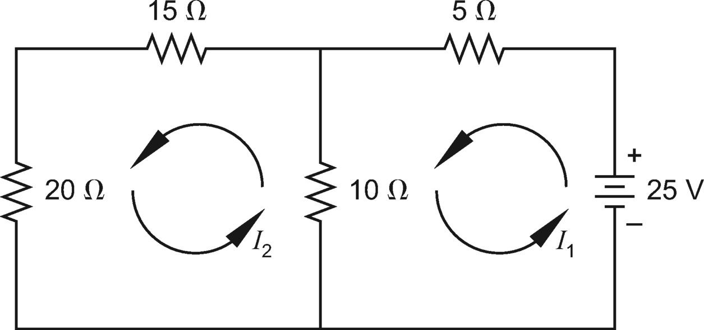
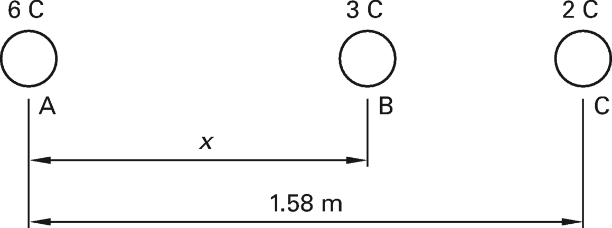
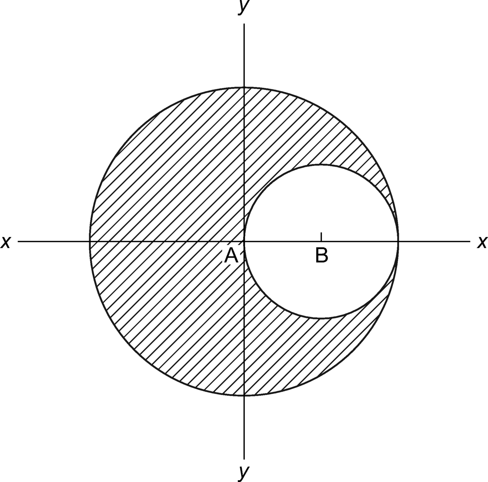
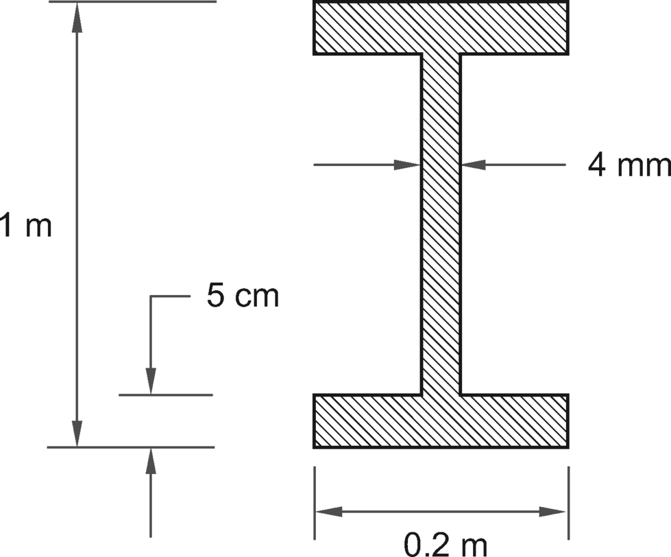
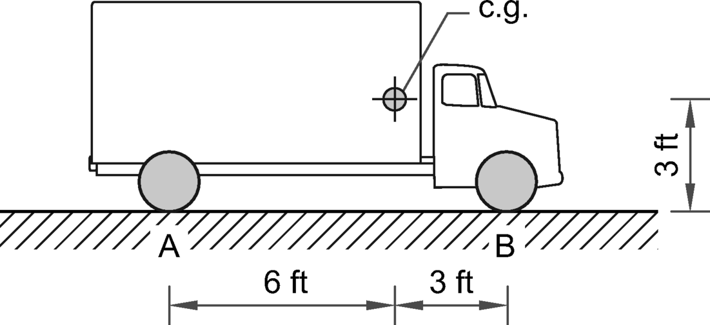
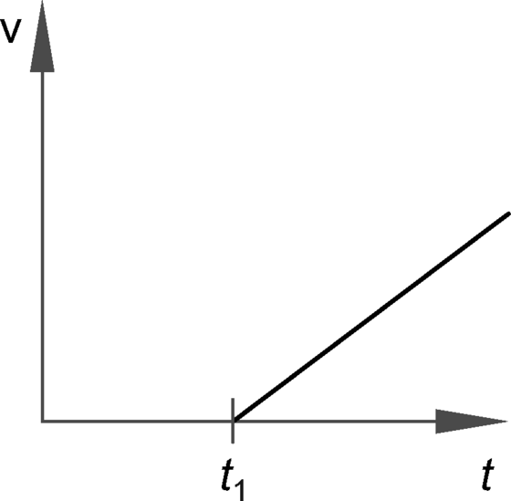
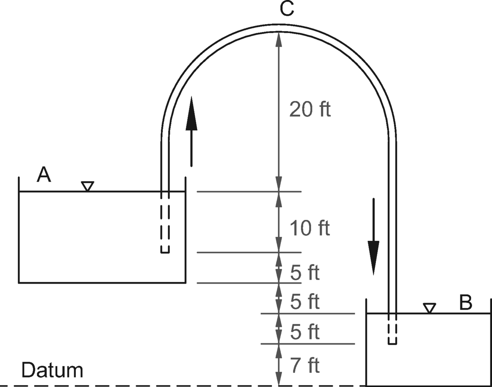
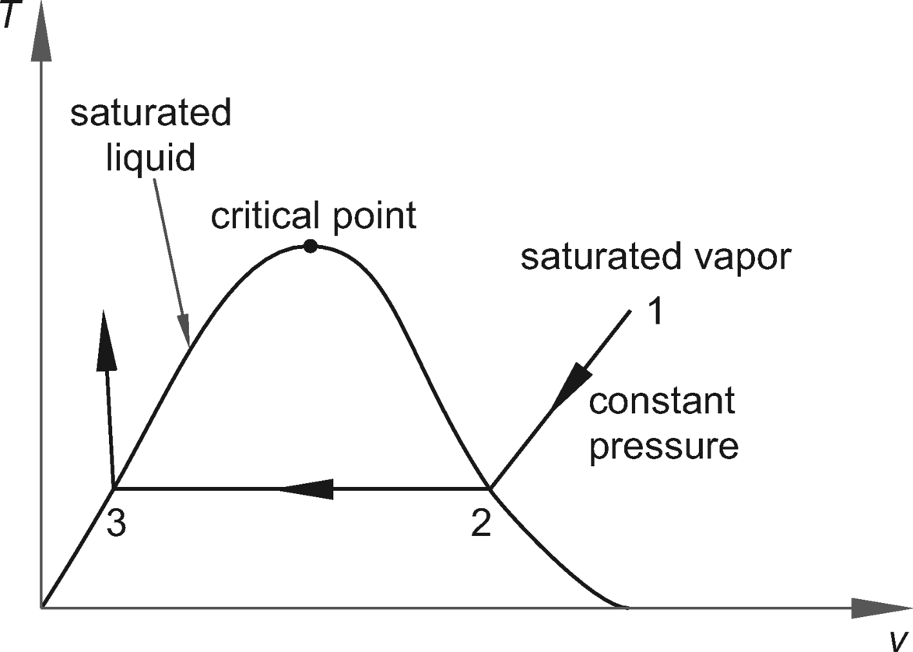
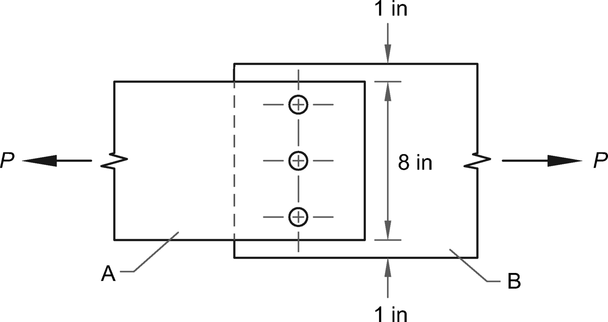

Mechanical Engineering Exam Flashcards
Preview of converted flashcards with LaTeX equations and technical diagrams
Question:
The equation of a line passing through points [latex]1, 2[/latex] and [latex]5, 0[/latex] is
[latex]A[/latex]
2y \+ x = 5
[latex]B[/latex]
y \+ 2x = 5
[latex]C[/latex]
y \+ 3x = 5
[latex]D[/latex]
3y \+ x = 5
Solution:
See the *NCEES Handbook*, Mathematics section. The general equation of a straight line is
The slope, m, of a line passing through points [latex]x1, y1[/latex] and [latex]x2, y2[/latex] is
For the two given points, the slope is
It can be represented graphically as
Use the slope and one of the original points to calculate the standard form of the line.
The standard form of the line passing through the points [latex]1, 2[/latex] and [latex]5, 0[/latex] is
***The answer is [latex]A[/latex].***
Question:
Line y = 2x is rotated about the y-axis. The volume of the resulting solid between y = 0 and y = 10 is most nearly
[latex]A[/latex]
50*π*/3
[latex]B[/latex]
100*π*/3
[latex]C[/latex]
150*π*/3
[latex]D[/latex]
250*π*/3
Solution:The line represented by the equation is shown.

The rotation of the line about its
y-axis generates a conical shape. The area of the circle at the top of the conical shape at a given
x is
The volume of a slice of thickness
dy is
The volume between
y = 0 and
y = 10 is
Shortcut: The solution can be arrived at by using the cone volume formula given in the Mensuration of Areas and Volumes section of the *NCEES Handbook*.
***The answer is [latex]D[/latex].***
Question:A differential equation, and its boundary conditions are

The general solution to the equation is
[latex]A[/latex]
e−3
t
[latex]B[/latex]
e3
t
[latex]C[/latex]
3
et
[latex]D[/latex]
ei3
t
Solution:
The equation is a first-order linear homogeneous differential equation with constant real coefficients. For the form y ′ \+ ay = 0, the general solution is y = Ce−at. Here, a = 3, so y = Ce−3t.
The constant C must satisfy the boundary condition. Substitute y[latex]0[/latex] = 1 into the general solution.
Therefore, C = 1, and y = e−3t.
***The answer is A.***
Question:
The area of a parallelogram bounded by vectors from the origin to points [latex]0, 5[/latex] and [latex]4, 5[/latex] is
[latex]A[/latex]
12.5
[latex]B[/latex]
16.0
[latex]C[/latex]
20.0
[latex]D[/latex]
25.0
Solution:See the *NCEES Handbook*, Mathematics section. The parallelogram can be drawn as

The two vectors are
The rule: The magnitude of determinant is the area of parallelogram, with vectors arranged in columns. For two given vectors, the area of the parallelogram is
***The answer is [latex]C[/latex].***
Question:The following series equation is used to approximate the value of sin
x, where
x is an angle.

The value of a 30° angle is approximated using the equation. The nearest maximum error rounded to six decimal places is
[latex]A[/latex]
2×10−6
[latex]B[/latex]
4×10−6
[latex]C[/latex]
8×10−6
[latex]D[/latex]
1×10−7
Solution:
See the *NCEES Handbook*, Mathematics section, for definition of a Taylor series. In a Taylor series, the function f[latex]x[/latex] is expanded about the point a and expressed as
If the value of a is zero, then the Taylor’s series expansion is called a Maclaurin’s series and is expressed as
The angle is
The equation in the problem statement is an alternating series of Maclaurin’s equation. For alternating series, the rule is that the error in approximating the function cannot be more than the first neglected term in the series. In this problem, the neglected term is –x7/7\!.
Determine the maximum error as
***The answer is [latex]A[/latex].***
Question:
Consider the following program segment.
10 INPUT A 20 B = 1 30 ITER = 1 40 ITER = ITER \+ 1 50 C = 0.5\*[latex]B \+ A/B[/latex] 60 B = C 70 GOTO 40 80 END
For A = 100 and ITER = 4, the value of C is most nearly
[latex]A[/latex]
10.00
[latex]B[/latex]
10.15
[latex]C[/latex]
10.81
[latex]D[/latex]
14.92
Solution:
The values of C at each iteration level are shown.
ITER C = 0.5\*[latex]B \+ A/B[/latex] 1 = 0.5[latex]1 \+ 100/1[/latex] = 50 2 = 0.5[latex]50 \+ 100/50[/latex] = 26 3 = 0.5[latex]26 \+ 100/26[/latex] = 14.92 4 = 0.5[latex]14.92 \+ 100/14.92[/latex] = 10.81 5 = 0.5[latex]10.81 \+ 100/10.81[/latex] = 10.03 6 = 0.5[latex]10.03 \+ 100/10.03[/latex] = 10.00
The algorithm is used to determine the square root of any number without using a square root function. The square root of 100 is 10, which is reached in six iterations. The problem asks for the value of C when at ITER = 4, which is 10.81.
***The answer is [latex]C[/latex].***
Question:
A matrix is shown.
The determinant of the matrix is most nearly
[latex]A[/latex]
−7
[latex]B[/latex]
10
[latex]C[/latex]
17
[latex]D[/latex]
24
Solution:Expansion by minors is used to find the value of a determinant. Using the *NCEES Handbook* notations, calculate the value of a third-order determinant by expanding the determinant.

Use the above equation to calculate the determinant of the given matrix.
***The answer is [latex]C[/latex].***
Question:Consider the following expression.

The value of this expression is
[latex]A[/latex]
1/3
[latex]B[/latex]
1/9
[latex]C[/latex]
1/27
[latex]D[/latex]
indeterminate
Solution:
As the value of x approaches 27, both the numerator and denominator become zero, which yields the 0/0 form of an indeterminate answer. Use L’Hopital’s rule and differentiate the expression.
Use the rule
The first differentiation of the expression is
***The answer is [latex]C[/latex].***
Question:
The three-number combination to open a safe is unknown. The lock keypad shows numbers from 0 to 9. The number of possible selections to open the combination lock is(hint:permutations)
[latex]A[/latex]
9
[latex]B[/latex]
81
[latex]C[/latex]
729
[latex]D[/latex]
1000
Solution:
In this problem, the order matters. For example, if the required combination to the safe is 123, then 321, 213, and so on, would not work. There are 10 numbers [latex]0 to 9[/latex] to select from for each required number. For n = 10 and r = 1, use the formula for the number of different permutations.
The process is repeated three times [latex]one for each entry number[/latex].
Total permutations = [latex]10[/latex][latex]10[/latex][latex]10[/latex] = 1000.
***The answer is [latex]D[/latex].***
Question:
A factory employs 100 workers. Their wages vary according to the tasks they perform, as shown.
no. of workers hourly wage 10 $20.00 10 $40.00 15 $35.00 20 $22.00 20 $25.00 25 $30.00
The median hourly wage of the workers is most nearly
[latex]A[/latex]
$25.00/hr
[latex]B[/latex]
$27.50/hr
[latex]C[/latex]
$30.00/hr
[latex]D[/latex]
$34.75/hr
Solution:
Arrange the data in either descending or ascending order. The set of data is comprised of 100 workers. Therefore, n = 100. The data in ascending order of wages is shown:
No. No. of
workers Wage
[latex]$/hr[/latex] Cumulative
frequency Notes 1 10 $20.00 10 2 20 $22.00 10 \+ 20 = 30 3 20 $25.00 30 \+ 20 = 50 50th ordered value 4 25 $30.00 50 \+ 25 = 75 51st ordered value 5 15 $35.00 75 \+ 15 = 90 6 10 $40.00 90 \+ 10 = 100 Total workers, n = 100
Since n is an even number, consider the two middle values: the 50th value is $25, and the 51st value is $30. The median is the average.
***The answer is B.***
Question:
A 500,000 ft2 area is excavated to mine an ore. The site is expected to contain two types of materials: soft ore and rock. An engineering report estimates that the site contains 25% soft ore, and another report estimates that the site contains 55% soft ore. The unit costs are $100/ft2 to excavate soft ore and $300/ft2 to excavate rock. The expected excavation cost is most nearly
[latex]A[/latex]
$100 million
[latex]B[/latex]
$107 million
[latex]C[/latex]
$110 million
[latex]D[/latex]
$115 million
Solution:Determine the expected cost based on the first report.

Determine the expected cost based on the second report.
Determine the expected cost: Use the equation for the arithmetic mean of a set of values from the Engineering Probability and Statistics section of the *NCEES Handbook*:
***The answer is [latex]C[/latex].***
Question:
A data set consists of four points as shown.
x y 2 9 3 11 5 15 9 22
Using least squares regression, the line equation that best fits the data is most nearly
[latex]A[/latex]
y = 5.46 \+ 1.85x
[latex]B[/latex]
y = 5.0 \+ 2x
[latex]C[/latex]
y = 5.22 \+ 1.88x
[latex]D[/latex]
y = 4.95 \+ 1.89x
Solution:
Use the formula from the *NCEES Handbook*. To evaluate the parameters in the regression equations, tabulate the data.
x y xy x2 2 9 18 4 3 11 33 9 5 15 75 25 9 22 198 81 Σ 19 57 324 119
Determine the summed values Sxy and Sxx, slope *b̂*, and the y-intercept *â*.
Use the calculated values from the table.
Determine the line equation.
***The answer is [latex]A[/latex].***
Question:
The United States government uses a 1% annual exceedance probability [latex]AEP[/latex] flood as the basis for the National Flood Maps. The probability that the peak discharge at a location in a 100-year flood plain will equal or exceed the 100-year flood level in the flood map in the next 100 years is most nearly(hint: exceedance probability = 1-(1-p)^n)
[latex]A[/latex]
1%
[latex]B[/latex]
33%
[latex]C[/latex]
63%
[latex]D[/latex]
100%
Solution:Given that the AEP = 1% = 0.01,

***The answer is C.***
Question:
Which three of the following statements best define the Code of Ethics for Engineers? [latex]Select the three that apply.[/latex]
[latex]A[/latex]
a set of guidelines that describes how a licensed engineer should behave professionally
[latex]B[/latex]
a set of aspirations that describes how a licensed engineer should behave professionally
[latex]C[/latex]
a set of rules that describes a licensed engineer’s responsibilities to the public, clients, and other licensees
[latex]D[/latex]
a set of laws that describes how a licensed engineer must behave professionally
[latex]E[/latex]
a set of rules that incorporates criminal penalties
Solution:
Ethics are a set of guidelines, rules, philosophical concepts, customs, norms, and aspirations for a licensee to follow. The Code of Ethics for Engineers articulates the ways in which moral and ethical principles apply to unique situations encountered in professional practice. It indicates to others that the professionals are seriously concerned about responsible and professional conduct.
In some cases, it is impossible to comply with every aspect of the Code. Therefore, ethics are also called a set of aspirations that a licensed engineer should aim for.
However, ethics are not subject to the law. As the late Chief Justice of the U.S. Supreme Court Earl Warren put it, “Society would come to grief without ethics, which is unenforceable in the courts and cannot be made part of law ... Not only does law in a civilized society presuppose ethical commitment, it presupposes the existence of a broad area of human conduct controlled only by ethical norms and not subject to law at all.” For this reason, a violation of ethics does not trigger a criminal penalty unless such act is deemed a crime under a criminal statute. Statements D and E are incorrect.
***The answer is [latex]A[/latex], [latex]B[/latex], and [latex]C[/latex].***
Question:
A licensed engineer’s first and foremost responsibility, in performance of professional services, is to the
[latex]A[/latex]
clients
[latex]B[/latex]
employers
[latex]C[/latex]
customers
[latex]D[/latex]
public welfare
Solution:
See the *NCEES Handbook* section Ethics and Professional Practice, which provides a narration of the model rules. According to the *Model Rules,* Sec. 240.15[latex]A[/latex][latex]1[/latex]: “Licensees shall be cognizant that their first and foremost responsibility is to safeguard the health, safety, and welfare of the public when performing services for clients and employers.” Therefore, a licensee’s first and foremost responsibility in performance of professional services is to the public welfare.
***The answer is [latex]D[/latex].***
Question:
Which one of the following categories of original works by an author or inventor is NOT recognized as intellectual property?
[latex]A[/latex]
original works of authorship
[latex]B[/latex]
words, phrases, symbols, or designs made to identify a distinguishable source of a good or service
[latex]C[/latex]
unique inventions and discoveries
[latex]D[/latex]
secret techniques or processes that the inventor intends to use in business to obtain an economic advantage over competitors who do not know or use it
Solution:
See the *NCEES Handbook*, Ethics and Professional Practice section. A copyright covers original works of authorship, such as a book, song, or movie. Therefore, statement A is correct.
A trademark protects words, phrases, symbols, or designs made to identify a distinguishable source of a good or service. Therefore, statement B is correct. A patent protects unique inventions and discoveries. Therefore, statement C is correct.
A trade secret applies to a formula, pattern, device, method, technique, process, and so on. To meet the most common definition of a trade secret, it must be used in business and give an opportunity to obtain an economic advantage over competitors who do not know or use it. Trade secrets offer little protection without a written agreement between the involved parties to keep it secret from others. In this case, the inventor intends to use it in business, but has not started using it. Therefore, the secret idea is not recognized as an intellectual property.
***The answer is [latex]D[/latex].***
Question:
The four elements of sustainable construction or manufacturing are to
[latex]A[/latex]
reduce virgin resource consumption, use recyclable materials, protect nature, and focus on quality
[latex]B[/latex]
increase virgin resource consumption, eliminate imported materials, protect nature, and focus on quality
[latex]C[/latex]
increase virgin resource consumption, eliminate the use of recyclable materials, protect nature, and focus on quality
[latex]D[/latex]
reduce virgin resource consumption, eliminate the use of recyclable materials, protect nature, and focus on quality
Solution:
The *NCEES Handbook* does not provide a prescriptive definition of sustainability. It provides those sustainable principles that include a consideration of
+
safety
+
public health
+
quality of life
+
resource allocation
+
nonrenewable resources
Several definitions of sustainability are available in the engineering world, and every definition has several elements, similar in nature but expressed in different words. In general, a sustainable construction requires that recyclable resources should be used to minimize consumption of virgin resources, and it requires protecting nature. A focus on quality is needed for every successful project.
***The answer is [latex]A[/latex].***
Question:
Which of the following statements regarding greenhouse gas emissions is NOT correct?
[latex]A[/latex]
The carbon footprint method is a method used to measure and communicate the total amount of greenhouse gases emitted into the atmosphere both directly and indirectly in the production and delivery of goods and services.
[latex]B[/latex]
Raw materials, energy consumed, and transportation are the main elements used to calculate the carbon footprint of a product.
[latex]C[/latex]
A standard global method exists for calculating a carbon footprint.
[latex]D[/latex]
People or organizations that fully offset their carbon emissions by investing in green technology or sustainable projects are said to be carbon-neutral.
Solution:
See the *NCEES Handbook*, Ethics and Professional Practice: Societal Considerations section. The parameters such as air and water pollution and atmospheric emissions are required in a life-cycle analysis. The *NCEES Handbook* does not explicitly provide information on greenhouse gases. The subject is covered in many textbooks. Greenhouse gases include carbon dioxide and other carbon compounds. There is no standard global method available for calculating the carbon footprint. Comparing the carbon footprint of different companies or products from different producers is extremely difficult. However, emissions can be grouped into categories. For example, the Berkeley Institute of the Environment focuses on transportation, housing, food, and goods and services.
***The answer is [latex]C[/latex].***
Question:
When providing design services for a construction project, which of the following is the standard of care that the courts traditionally assign to the engineer in responsible charge?
[latex]A[/latex]
The engineer should produce a set of perfect drawings.
[latex]B[/latex]
The engineer should meet the minimum requirement of the governing building code and no more.
[latex]C[/latex]
The engineer should use state-of-the-art methods that a reasonably prudent engineer would follow when designing similar projects in similar localities.
[latex]D[/latex]
The engineer is responsible for the job site safety of workers.
Solution:
Option A is incorrect because a standard of perfection cannot be met.
Option B is incorrect because meeting the minimum code requirement may not result in meeting the standard of care. Generally, the code provisions provide the minimum design requirements a design professional must adhere to. Sometimes the minimum requirements are adequate, and sometimes they are not. In other occasions, the code provisions may not address a situation at all. In such situations, local engineering associations or specialty institutes provide the state-of-the-art information for the design issue. For example, an engineer uses the code yet designs a building system that performs poorly in an earthquake. Should the engineer use the same code provision again for the redesign? If not, what design criteria should be used in such a situation? A reasonable approach would be to look beyond the code provisions and incorporate state-of-the-art methods in design.
The engineer is not responsible for job site safety unless the engineer assumes such responsibility by contract or conduct. Therefore, option D is incorrect.
***The answer is [latex]C[/latex].***
Question:
A community sells a property for $24 in 1626, and the proceeds are invested at 7% interest compounded yearly. The value of the investment at the end of 2016 is most nearly
[latex]A[/latex]
$70 million
[latex]B[/latex]
$700 million
[latex]C[/latex]
$7 billion
[latex]D[/latex]
$7 trillion
Solution:
The following information is given.
Determine the future value given the present value by using the formula provided in the Engineering Economics section of the *NCEES Handbook*.
***The answer is [latex]D[/latex].***
Question:
Equipment selection has been narrowed to two options with the parameters shown. The expected rate of return for the equipment is 8%.
equipment parameters 1 2 initial cost $50,000 $75,000 annual maintenance $15,000 $10,000 life expectancy [latex]yr[/latex] 10 15 salvage value $5000 $12,000
Which of the following statements is true?
[latex]A[/latex]
Equipment 1 is more economical because it saves nearly $8500.
[latex]B[/latex]
Equipment 1 is more economical because it saves nearly $1200.
[latex]C[/latex]
Equipment 2 is more economical because it saves nearly $8500.
[latex]D[/latex]
Equipment 2 is more economical because it saves nearly $1200.
Solution:
The problem presents two mutually exclusive alternatives, out of which one alternative must be selected. There is no “do nothing” choice. The income and expenses for each option are converted to the equivalent present values, also called the P-pattern. The given annual interest rate is 8%. The P-value is the present net equivalent value of the stream of all future incomes and expenses. The alternative with the lowest P-value is selected.
The P-pattern values of a single future payment [latex]P given F[/latex] and the stream of future payments [latex]P given A[/latex] are tabulated in the *NCEES Handbook*, in the Engineering Economics section. Select the interest rate table for i = 8%.
**step 1: **
For equipment 1, its useful life is 10 years. Therefore, read two factor values for n = 10 in the table. The factor value P/F is used to convert the future salvage value to the present income value. The factor value P/A is used to convert the annual maintenance values to a single present expense.
Calculate the present worth, P1, for the first equipment option.
**step 2:
The present worth, P2, for the second equipment option is
**step 3:
Select the equipment that costs less. Equipment 1 costs less than equipment 2. Therefore, it is a better choice. Determine the difference in cost.
***The answer is A.***
Question:
A tollway authority at present charges $3.00 as a toll fee and is considering raising the toll fee. A total of 20,000 motorists use the road daily. It is estimated that for each $0.25 increase in the toll, 1000 fewer motorists will use the toll road. The toll fee increase that will maximize the authority’s income is most nearly
[latex]A[/latex]
$1.00
[latex]B[/latex]
$1.50
[latex]C[/latex]
$1.75
[latex]D[/latex]
$2.25
Solution:
This is an optimization problem in which the effect of each toll fee increment must be evaluated. From the Differential Calculus section of Mathematics in the *NCEES Handbook*, the function y = f[latex]x[/latex] is a maximum for x = a if *f′*[latex]a[/latex] = 0 and f ′′[latex]a[/latex] < 0.
Let x be the number of $0.25 fee increases needed to fully optimize the fee.
Check the second condition.
Both maxima conditions are met. The income is maximized when the authority increases the charge by 4 × $0.25 = $1.00. A graph of the optimal toll increase versus income is shown.
***The answer is [latex]A[/latex].***
Question:
Two alternatives for constructing a project are being considered. Alternative A costs $1 million initially and $100,000 in service and maintenance each year. Alternative B costs $1.8 million and $65,000 in service and maintenance each year. The project is expected to have no salvage value after a service life of 25 years, and the expected interest rate is zero. Which of the options should be used?
[latex]A[/latex]
alternative A
[latex]B[/latex]
alternative B
[latex]C[/latex]
either alternative A or B
[latex]D[/latex]
neither alternative A nor B
Solution:The life-cycle cost equations for alternatives A and B [latex]in millions of dollars[/latex] are

Let
t be the number of years after construction. The break-even point will occur when the values of the two alternatives are equal. Set the two equations equal to each other, and solve for
t.
After 22.86 years of service life, alternative B becomes more economical, as shown.
As the expected life cycle of the project is 25 years, alternative B should be used.
***The answer is [latex]B[/latex].***
Question:
A piece of equipment is valued at $100,000. The equipment’s value is depreciated at a rate of 10% per year. The book value after 10 years is most nearly
[latex]A[/latex]
$0
[latex]B[/latex]
$35,000
[latex]C[/latex]
$65,000
[latex]D[/latex]
$260,000
Solution:The problem involves a single lump-sum investment of $100,000 now. The investment will lose its value at a rate of 10% compounded annually. Therefore, the problem requires converting the present payment value
P to its future worth
F after
n interest periods at an interest rate of
I per interest period. However, the interest rate is negative, and the value is declining since the equipment value is depreciating.

There is no factor table provided in the *NCEES Handbook* for depreciation or declining rates. Therefore, use the relationship

***The answer is [latex]B[/latex].***
Question:
A contractor buys equipment at a cost of $150,000. After six years, its salvage value is estimated to be $10,000. Interest on the loan for the equipment is 8%. The annual cost is most nearly
[latex]A[/latex]
$23,000
[latex]B[/latex]
$29,000
[latex]C[/latex]
$31,000
[latex]D[/latex]
$34,000
Solution:Draw the timeline of cash flow as shown.

Use the factor tables given in the Engineering Economics section of the *NCEES Handbook* to determine the annual cost.
***The answer is [latex]C[/latex].***
Question:A circuit is shown.

The current in the 10 Ω resistor is most nearly
[latex]A[/latex]
0.43 A
[latex]B[/latex]
1.53 A
[latex]C[/latex]
1.96 A
[latex]D[/latex]
2.50 A
Solution:
The circuit has two loops. Assume loop currents as I1 and I2, as shown. More than one path exists for current to flow in the circuit.

Considering the conservation of energy in electrical circuits, use Kirchhoff’s voltage law [latex]KVL[/latex]. KVL states that the sum of the rises and drops in voltage around any closed path in an electrical circuit must be zero. In other words,
The loops have resistors which absorb energy. Apply Ohm’s law.
V is the voltage in volts, I is the current in amperes, and R is the resistance in ohms. Write an equation for voltage equilibrium for each loop in voltage.
For loop 1,
For loop 2,
Solving the simultaneous equations gives I1 = 1.96 A and I2 = 0.43 A.
Both current values are positive, which indicates that the assumed current directions are correct. The current in 10 Ω resistor is the difference between the two currents.
***The answer is B.***
Question:
A circuit is shown.
Model the circuit by a single source and a single resistor in series as shown.
The voltage across terminals a and b is most nearly
[latex]A[/latex]
5 V
[latex]B[/latex]
10 V
[latex]C[/latex]
13 V
[latex]D[/latex]
25 V
Solution:A complex circuit that has many electrical components can generally be modeled by a single source and single resistor in series. The simplified circuit is called the Thevenin equivalent circuit, as shown.

Let
Veq be the equivalent voltage across terminals a and b with 20 Ω removed from the circuit. The circuit has two loops with currents
I1 and
I2 as shown.
See the *NCEES Handbook*, Electrical and Computer Engineering section. For resistors connected in series, the current in all resistors is the same, and the equivalent resistance for
n resistors in series is
Apply Ohm’s law. The current is
I =
V/
R. Calculate the current in each loop.
Using the conservation of energy in each loop,
The open circuit voltage
Veq equals
Vab*.*
***The answer is [latex]A[/latex].***
Question:
From the following statements, select all statements that are correct about Kirchhoff’s current law [latex]KCL[/latex].
[latex]A[/latex]
KCL is applicable to any closed path.
[latex]B[/latex]
KCL is applicable to any closed surface.
[latex]C[/latex]
KCL states that arithmetic sum of current at a node is zero.
[latex]D[/latex]
KCL states that algebraic sum of current at a node is zero.
[latex]E[/latex]
KCL requires that the clockwise direction of current should be assumed positive and counterclockwise direction should be assumed negative.
Solution:
See the *NCEES Handbook*, Electrical and Computer Engineering section. KCL applies to the current at any closed surface such as a node or junction. KCL does not apply to currents in a circuit. Therefore, statement B is correct, and statement A is not.
KCL states that the sum of all incoming currents equal the sum of all outgoing currents at a node. In other words, the algebraic sum of currents at a node is zero. Therefore, statement D is correct, and statement C is incorrect.
In applying KCL, it is necessary to assume a direction of current as positive. It is for a reference. The assumed direction may be clockwise or counterclockwise. Therefore, statement E is incorrect.
***The answer is [latex]B[/latex] and [latex]D[/latex].***
Question:
Two point charges are placed at points A and C. A third point charge is placed at point B in line with the other two so that it is not subject to any net force from the other two point charges. The electrical charge units are in coulombs, as shown.

The distance AB is most nearly
[latex]A[/latex]
44 cm
[latex]B[/latex]
58 cm
[latex]C[/latex]
100 cm
[latex]D[/latex]
102 cm
Solution:
See the *NCEES Handbook*, Electrical and Computer Engineering section. According to the first law of electrostatics, like charges repel each other and opposite charges attract each other. According to the second law, known as Coulomb’s law, the electrostatic force on charge 2 due to charge 1 is
In this equation, Qi is the ith point charge, r is the distance between charges 1 and 2, ar12 is a unit vector directed from 1 to 2, and *ε* is the permittivity of the medium.
Since all charges in this problem are in the same medium and in a line, the charge equations between A and B and between C and B are simplified to determine x, the distance AB.
Set FAB and FCB as equal and solve for x.
***The answer is C.***
Question:
An eight-pole alternator is running at 750 rpm and supplying power to a six-pole, three-phase induction motor. The motor has a full-load slip of 4%. The full-load speed of the motor is most nearly
[latex]A[/latex]
720 rpm
[latex]B[/latex]
750 rpm
[latex]C[/latex]
780 rpm
[latex]D[/latex]
960 rpm
Solution:See the *NCEES Handbook*, Electrical and Computer Engineering section. The AC motor’s synchronous speed, *ns,* is expressed as

In this equation,
f is the line voltage frequency in hertz, and
p is the number of poles.
Apply the formula in the following two steps.
**step 1: **
Determine the frequency of the three-phase current produced by the alternator.
**step 2:
Based on the frequency, determine the speed of the three-phase induction motor.
**step 3:
The difference between synchronous speed and actual speed is called
slip. The slip for an induction motor is
Rewrite the above equation to determine the actual rotational speed,
n.
***The answer is [latex]D[/latex].***
Question:
A bolt is being pulled by two forces A and B as shown.
Which of the following diagrams best represents the resultant, R, graphically?
[latex]A[/latex]
[latex]B[/latex]
[latex]C[/latex]
[latex]D[/latex]
Solution:
A force is a vector possessing magnitude and direction. The forces are added according to the parallelogram law. A parallelogram with sides A and B represents the resultant force vector, as shown.
Option D correctly represents the directions and magnitudes of the force vectors and their resultant.
***The answer is [latex]D[/latex].***
Question:
A moment couple is a system of
[latex]A[/latex]
two equal moments at the ends of a beam
[latex]B[/latex]
two equal and opposite moments at the ends of a beam
[latex]C[/latex]
two equal and opposite parallel forces
[latex]D[/latex]
two equal and opposite concurrent forces
Solution:
See the *NCEES Handbook*, Statics: Moments [latex]Couples[/latex] section. A couple is defined as a system of two equal and opposite forces that are parallel to each other. As such, the forces are nonconcurrent. Therefore, option C is correct, and options A, B, and D are incorrect.
***The answer is [latex]C[/latex].***
Question:A concrete block weighing 1200 lbf needs leveling on one edge. A crowbar is used to lift the edge, as shown.

The downward force required at point D to lift the block is most nearly
[latex]A[/latex]
100 lbf
[latex]B[/latex]
200 lbf
[latex]C[/latex]
600 lbf
[latex]D[/latex]
800 lbf
Solution:See the Statics section of the *NCEES Handbook*. Two conditions must be met for equilibrium.

The block weighs 1200 lbf. The weight acts vertically down at the centroid of the block, which is located midway between points A and B. The weight is equally split between the two corners A and B. Corner A bears against the surface below, and corner B is carried by the crowbar.
Calculate the load on the tip of the crowbar at B as
The crowbar has two arms, BC and CD. Assuming counterclockwise moment is positive, consider the moment at point C.
***The answer is [latex]B[/latex].***
Question:A vertical pole is held by two stay cables, as shown.

All connections are pinned. If the tension in cable AB is 100 N, the tension in cable AC is most nearly
[latex]A[/latex]
100 N
[latex]B[/latex]
120 N
[latex]C[/latex]
150 N
[latex]D[/latex]
180 N
Solution:
The tower is a plane determinate truss. See the Statics section of the *NCEES Handbook*. Two equilibrium conditions must be met.
For the pole AD to remain plumb, the horizontal components of the tension forces in each cable must be equal. Using the free-body diagram at joint A, resolve the forces in the x- and y-directions.
***The answer is [latex]B[/latex].***
Question:The truss tower is shown. It has nine joints and 17 members. All joints are pinned, and the bars making up the X-bracings are not connected at their cross-points.

The total degree of indeterminacy of the tower is
[latex]A[/latex]
1
[latex]B[/latex]
2
[latex]C[/latex]
3
[latex]D[/latex]
4
Solution:See the *NCEES Handbook*, Civil Engineering: Stability, Determinacy, and Classification of Structures. A truss is considered stable and indeterminate if
 m
m is the number of members,
j is the number of joints, and
r is the number of reactions. From the above inequality, the degree of indeterminacy for a truss structure can be determined as
The tower is a planar [latex]2-D[/latex] truss with two supports. Each support can develop horizontal and vertical reactions.
The degree of indeterminacy of the tower is
***The answer is [latex]C[/latex].***
Question:Consider a 12 in radius circular disk. Its center is located at point A. A hole of 12 in diameter is cut from the disk. The center of the hole is located at point B. The distance between A and B is 6 in.

Where is the center of gravity of the composite disk located?
[latex]A[/latex]
at point A
[latex]B[/latex]
within segment AB
[latex]C[/latex]
left of point A, in line with segment AB
[latex]D[/latex]
somewhere else
Solution:
The center of gravity [latex]CG[/latex] of a body, also called its centroid, is defined as a point where the total area of the body acts. See the *NCEES Handbook*, Statics: Centroids of Masses, Areas, Lengths, and Volumes section, for the formula to compute the CG of an area. However, the solution does not require any calculations to determine the CG of the area.
**step 1: **
Draw a sketch of the disk with the hole, as shown with the x- and y-axes. To locate the CG of an area, its x- and y-coordinates are needed. Due to symmetry about x-axis, the y-coordinate of the CG is zero, and thus the CG lies on the x-axis.

**step 2:
It is known that the CG of a circle lies at its center. Therefore, the CG of a 12 in radius solid disk lies at point A, and the CG of a 6 in radius void lies at point B.
**step 3:
After the 6 in radius circular is cut out, there is more area left of point A than on the right side of point A. Therefore, the CG of the composite area shifts to the left of point A, along the x-axis.
***The answer is [latex]C[/latex].***
Question:
A steel girder is made from three welded plates as shown.

The moment of inertia about the major axis of the girder is most nearly
[latex]A[/latex]
0.5 × 10−3 m4
[latex]B[/latex]
3.3 × 10−3 m4
[latex]C[/latex]
16.6 × 10−3 m4
[latex]D[/latex]
4.76 × 10−3 m4
Solution:The I-shaped beam can be considered in terms of three rectangular shapes.
I-shaped section = Rectangle A – Rectangle B – Rectangle C
I-shaped section = Rectangle A – Rectangle [latex]B \+ C[/latex]
This is shown as

The moment of inertia of a rectangular section about its axis is determined using the formula
Substituting the sizes of the two rectangles into the equation,
Alternative method: Use the moment of inertia parallel-axis theorem.
***The answer is [latex]D[/latex].***
Question:
Consider the belt friction formula.
Which of the following statements are true for the equation shown?
[latex]A[/latex]
The force F1 is always larger than F*
[latex]B[/latex]
The force F2 is always larger than F*
[latex]C[/latex]
The formula can be applied to friction problems where the angle of contact exceeds 360°.
[latex]D[/latex]
The formula is inapplicable to friction problems involving band brakes.
[latex]E[/latex]
The formula is inapplicable to friction problems involving ropes wrapped around a capstan that remains fixed.
Solution:
The belt friction formula is given in the *NCEES Handbook*, Statics: Belt Friction section.
The force F1 in the formula represents the tensile force on the pulling side. It is always larger than F* Therefore, statement A is correct, and statement B is incorrect.
The formula applies to friction problems where the angle of contact may exceed 360° [latex]2*π* rad[/latex]. If the rope is wrapped n times around a post, then angle *θ* becomes 2*πn.* Statement C is true.
The formula applies to friction problems involving band brakes. In band brakes, the band remains fixed, and the drum has impending rotation. Statement D is false.
The formula is applicable to problems involving ropes wrapped around a capstan or post. In this case, the capstan remains fixed, and the angle *θ* may exceed 2*π* rad. Statement E is false.
***The answer is [latex]A[/latex] and [latex]C[/latex].***
Question:Consider the ladder shown.

Assume zero friction between the ladder and wall. The minimum coefficient of friction needed at the floor for a 200 lbf person to safely use the ladder is most nearly
[latex]A[/latex]
0.2
[latex]B[/latex]
0.3
[latex]C[/latex]
0.4
[latex]D[/latex]
0.5
Solution:The position of the applied load
W is not given. The load can be applied anywhere between points A and B to determine the controlling condition. For the ladder to be in equilibrium, three conditions must be met, as given in the *NCEES Handbook*.

For the general condition, when both the wall and floor can develop friction and the load is located at a distance *x,* the reactions are as shown.
**step 1: **
Apply the three conditions to the forces shown.

**step 2:
It is known that *μ*
w = 0. Simplify the above equilibrium conditions.
**step 3:
Solve for *μ*
f.
**step 4:
The above relationship shows that the required friction factor depends on the horizonal distance of the applied weight. It is zero when the applied load is at point B, and it is at its maximum when the load is at point A. At its maximum, the friction factor is
Thus, the minimum coefficient of friction needed at the floor to keep the ladder stable is 0.5.
***The answer is [latex]D[/latex].***
Question:
A cantilever is carrying a point load as shown.
The moment at support A is most nearly
[latex]A[/latex]
24 kN·m [latex]ccw[/latex]
[latex]B[/latex]
28 kN·m [latex]ccw[/latex]
[latex]C[/latex]
36 kN·m [latex]ccw[/latex]
[latex]D[/latex]
49 kN·m [latex]cw[/latex]
Solution:Resolve the applied load
F at point C into its
x- and
y-components as shown.
Move the force system from C to B. Use the principle that any force acting at point C can be moved to point B provided that a couple is added with a moment equal to the moment of
F about B.
Let counterclockwise moments be positive. The associated moment is

Similarly, move the force system from B to A.
The resulting moment at support A is calculated as
***The answer is [latex]B[/latex].***
Question:
A stone is dropped from a cliff top. The stone is seen hitting the ground 2.9 s later. Neglect air resistance to the stone. The cliff height above ground is most nearly
[latex]A[/latex]
12 m
[latex]B[/latex]
32 m
[latex]C[/latex]
41 m
[latex]D[/latex]
55 m
Solution:
The stone’s initial velocity, u, is zero. The following information is given.
Determine the distance traveled, s, as
***The answer is [latex]C[/latex].***
Question:
A concrete block weighing 145 lbf is resting on a concrete floor. The bearing surface of the block is 11 in square. The coefficient of friction is 0.7. The minimum force needed to slide the block is most nearly
[latex]A[/latex]
82.5 lbf
[latex]B[/latex]
102 lbf
[latex]C[/latex]
145 lbf
[latex]D[/latex]
173 lbf
Solution:Given:

Determine the impending sliding force as
***The answer is [latex]B[/latex].***
Question:
A constant torque of 0.1 N·m is applied to an initially stationary flywheel with a moment of inertia of 3.14 kg·m2. At the end of its tenth revolution, the speed of the flywheel is most nearly
[latex]A[/latex]
1 rad/s
[latex]B[/latex]
2 rad/s
[latex]C[/latex]
3.14 rad/s
[latex]D[/latex]
31.4 rad/s
Solution:
The change in kinetic energy is the work done in accelerating the flywheel from *ω*1 to *ω** The work-energy formula is
Given:
Therefore, *ω*1 = 0.
***The answer is [latex]B[/latex].***
Question:
A car weighs 6000 lbf and is traveling east at 30 mph when it collides head on with a 15,000 lbf truck traveling west at the same speed. After the collision, the vehicles stick together. Momentum is conserved during the collision. The vehicles’ common velocity after the crash is most nearly
[latex]A[/latex]
8 mph to the west
[latex]B[/latex]
10 mph to the west
[latex]C[/latex]
13 mph to the west
[latex]D[/latex]
14 mph to the west
Solution:This is a plastic case wherein the vehicles stick together after the collision. Use the impact equation for conservation of momentum given in the Dynamics section of the *NCEES Handbook*.

In this case, the velocities are equal but in opposite directions. Therefore, v2 *=* –v1. Assume the eastbound velocity [latex]v1[/latex] is positive.

***The answer is [latex]C[/latex].***
Question:
A 4 lbf weight stretches a spring 6 in over its natural length. The undamped natural frequency of the spring vibration is most nearly
[latex]A[/latex]
6 rad/sec
[latex]B[/latex]
2*π* rad/sec
[latex]C[/latex]
4√3 rad/sec
[latex]D[/latex]
8 rad/sec
Solution:
Use units of ft-lbf. The spring undamped frequency, *ω*n, can be determined in terms of the static deflection of the system, *δ*st.
The stiffness, k, is the force required to stretch a spring per unit length.
Use the static spring-displacement formula for constant force given in the Dynamics section of the *NCEES Handbook*.
Since mg = W, the formula reduces to
***The answer is [latex]D[/latex].***
Question:
A baseball with a mass of 149 g travels at 30 m/s and is caught by a player and brought to rest in 0.1 sec. The average force applied to bring the ball to rest is
[latex]A[/latex]
9.81 N
[latex]B[/latex]
44.7 N
[latex]C[/latex]
149 N
[latex]D[/latex]
194 N
Solution:
The average force equals the change in momentum per unit time. It is expressed as
In this case, the ball decelerated to a complete stop [latex]v2 = 0[/latex].
Therefore,
***The answer is [latex]B[/latex].***
Question:
An asphalt pavement roller has a mass of 10,000 kg. Its wheels have a radius of gyration of 0.5 m and a mass of 5000 kg each. The diameter of each wheel is 1.1 m. The roller moves at a speed of 10 km/h. The total kinetic energy of the roller is most nearly
[latex]A[/latex]
15,000 N·m
[latex]B[/latex]
30,000 N·m
[latex]C[/latex]
40,000 N·m
[latex]D[/latex]
70,000 N·m
Solution:The total kinetic energy [latex]KE[/latex] of a roller includes its KE of translation and KE of rotation.

The kinetic energy of translation [latex]motion[/latex] depends on the mass of the entire body in motion and its velocity.
The kinetic energy of rotation depends on the mass moments of inertia of the rotating parts and their angular velocity. In this problem, the masses of the front-axle wheel and rear-axle wheel and their angular velocities are equal.
The wheel radius is
The angular velocity is
***The answer is [latex]D[/latex].***
Question:
A vehicle weighing 10,000 lbf traveling at 60 mph comes to a stop without skidding. The wheelbase and center of gravity of the vehicle are shown.

The deceleration is 13 ft/sec2. The coefficient of friction, *μ*, between the road and the vehicle is most nearly
[latex]A[/latex]
0.2
[latex]B[/latex]
0.4
[latex]C[/latex]
0.8
[latex]D[/latex]
1.0
Solution:
The deceleration, *a,* and coefficient of friction, *μ*, are related as
Determine the coefficient of friction, *μ*, between the road and the vehicle as
***The answer is [latex]B[/latex].***
Question:An impulse force acts on a 100 kg mass sitting on an inclined plane with a slope of 3/4 as shown.

The impulse force is zero at 0 s and increases by 400 N/s.
The coefficient of friction between the block and the sloping surface is 0.2. The time it takes for the block to start moving is most nearly
[latex]A[/latex]
0 s
[latex]B[/latex]
1.33 s
[latex]C[/latex]
1.87 s
[latex]D[/latex]
9.81 s
Solution:
In order for the block to move up the slope, the applied force must overcome two resisting forces: friction and gravity. Since the applied force is zero when time is zero, the block will start moving sometime later. Let time t1 be the moment that the block starts to move. The block’s velocity will increase with time, as shown.

**step 1: **
Use the *NCEES Handbook*, Dynamics section. Draw a free-body diagram of the forces acting on the block, resolving the forces in the x- and y-directions.
Calculate the tangential force, Fx, and the normal force, N, as
Calculate the friction force between the block and the sliding surface as
The force-time diagram shows that the applied force increases linearly with time. The impending motion of the block will initiate when the applied force equals the sum of resisting forces.
***The answer is [latex]C[/latex].***
Question:A three-rod mechanism A-B-C-D is shown.

The rod AB is rotating at an angular speed of 10 rad/sec. The linear velocity at point B is most nearly
[latex]A[/latex]
5.0 ft/sec
[latex]B[/latex]
7.1 ft/sec
[latex]C[/latex]
35 ft/sec
[latex]D[/latex]
71 ft/sec
Solution:See the instantaneous center [latex]IC[/latex] method given in the Dynamics section of the *NCEES Handbook*. The rod AB rotates about point A, and the rod CD rotates about point D. The rod BC rotates about its IC, located at C as shown.

Determine the linear velocity at point B, v
B, as
***The answer is [latex]D[/latex].***
Question:
A steel bar is pulled by a 300 kN axial force. The bar is 1 m long and has a diameter of 3 cm. Its elongation is most nearly
[latex]A[/latex]
1 mm
[latex]B[/latex]
2 mm
[latex]C[/latex]
5 mm
[latex]D[/latex]
7 mm
Solution:The material properties of steel are given in the Typical Material Properties table in the Mechanics of Materials: Material Properties section of the *NCEES Handbook*. From the Units and Conversion Factors table of the *NCEES Handbook*,

The Young’s modulus of steel is
The cross-sectional area of the bar is
The elongation of the bar, Δ
L, is
***The answer is [latex]B[/latex].***
Question:A 1 in diameter bolt resists a 16 kips force as shown.

The shear stress in the bolt is most nearly
[latex]A[/latex]
7.5 ksi
[latex]B[/latex]
10 ksi
[latex]C[/latex]
15 ksi
[latex]D[/latex]
20 ksi
Solution:The bolt is in double shear. The bolt shear is distributed over two cross-sectional areas of the bolt.

Determine the shear stress, *τ*, in the bolt as
***The answer is [latex]B[/latex].***
Question:
A 6 cm square, 2 m long steel bar is loaded concentrically. The bar’s ends are pinned. Its buckling capacity is most nearly
[latex]A[/latex]
53 kN
[latex]B[/latex]
150 kN
[latex]C[/latex]
530 kN
[latex]D[/latex]
1500 kN
Solution:I is the moment of inertia of the section about its weak axis [latex]i.e., the
y-axis[/latex]. Determine the moment of inertia of a rectangular section bending about its
y-axis, as given in the Statics section of the *NCEES Handbook*.

The modulus of elasticity for steel is
For a pinned column loaded concentrically, use the Euler equation to determine the buckling capacity,
Pcr.
***The answer is [latex]C[/latex].***
Question:
A metallic surveying tape is calibrated at 68°F. The tape is used in the field when the temperature is 98°F. The modulus of thermal expansion of the tape material is 0.0000065 in/in-°F. The measured distance is 3001.20 ft. The true distance is most nearly
[latex]A[/latex]
2999.32 ft
[latex]B[/latex]
3000.61 ft
[latex]C[/latex]
3001.79 ft
[latex]D[/latex]
3003.08 ft
Solution:The following information is given.

Determine the error induced as
Due to the high temperature, the tape expanded 0.59 ft. Therefore, the measured length is less than the true length. The true distance is calculated as
***The answer is [latex]C[/latex].***
Question:
A simply supported beam carries a uniformly distributed load [latex]UDL[/latex] over its entire span. The UDL is replaced by a concentrated load, P, that equals the UDL in magnitude; the location of the load P coincides with the center of gravity [latex]CG[/latex] of the UDL. Which forces remain the same for the beam under both loadings?
[latex]A[/latex]
External forces
[latex]B[/latex]
Internal forces
[latex]C[/latex]
Deflections
[latex]D[/latex]
None of the above
Solution:
The external forces consist of the vertical reactions at beam supports. From statics, the UDL and the concentrated load, P, are equal in magnitude, and their centers of gravity coincide. As such, both loadings have their CGs at the midspan of the beam. Therefore, the beam reactions are equal for both loadings. Option A is correct.
The shear force and bending moments in the beam across the span are the internal forces. The internal forces are unique to the type of loading. See the *NCEES Handbook*, Mechanics of Materials: Simply Supported Beam Slopes and Deflections. This table shows that the maximum bending moment induced by a concentrated load P is twice the bending moment induced by the same total load distributed over the beam span. Similarly, the deflection profiles under the loading differ substantially. Therefore, options B and C are incorrect.
***The answer is [latex]A[/latex].***
Question:
A simply supported beam is shown.
Which of the following is the corresponding shear force diagram?
[latex]A[/latex]
[latex]B[/latex]
[latex]C[/latex]
[latex]D[/latex]
Solution:
For the shear force and bending moment sign convention, use the convention given in the *NCEES Handbook*, Mechanics of Materials: Beams.
The beam loading is symmetrical and, therefore, the reactions at supports A and C are equal. The shear force at any section is defined as the sum of the reaction and applied forces on the left of the section. To determine the shear force at any point along the beam span, consider the left support A as a reference point, and select the section at any distance between A and B.
1.
The shear force at the left support A equals the support reaction.
2.
The shear force at the section between A and B is the sum of the support reaction at A and the applied loads. As the applied uniformly distributed load is in the direction opposite to the reaction, the shear force at all sections between A and B would decrease linearly. Therefore, options A, B, and C are incorrect.
3.
The concentrated load at point B acts downward. The shear force is defined as the sum of the support reaction at A and the applied loads, so the shear force at midspan has a sharp drop, as shown in the option D.
4.
By symmetry, the shear force diagram for the right side of the span, CB, is the mirror image of the shear force in the left side of the span, AB, except for the sign.
As given in the *NCEES Handbook*, the shear force is considered positive if the right portion of the beam tends to shear downward with respect to the left. In this case, the right portion of the beam tends to shear downward with respect to the left. Therefore, the shear force diagram option D has the proper sign convention.
***The answer is [latex]D[/latex].***
Question:Consider a two-span beam as shown. The beam has two equal spans which carry a uniformly distributed load [latex]UDL[/latex] of 3 N/m. The maximum moment in a propped cantilever under a UDL is
wL2/8.

The bending moment of the beam at its central support is
[latex]A[/latex]
0 N·m
[latex]B[/latex]
120 N·m
[latex]C[/latex]
150 N·m
[latex]D[/latex]
600 N·m
Solution:The beam has two equal spans and is subjected to a UDL. The beam slope at the central support A is zero due to the symmetry of geometry and loading. Because the middle support A does not rotate, it can be considered as fixed. Therefore, the two-span beam can be visualized as two single-span propped cantilevers, as shown.

The moment at the fixed end A of a propped cantilever, as given in the problem statement, is
***The answer is [latex]C[/latex].***
Question:
A 1 in diameter and 3 ft long bar specimen of a low steel alloy with a yield stress of 36 ksi is tested under tension to an elongation of 0.20 in and then unloaded. The steel behavior during the test is elastic-plastic. The permanent elongation of the bar is most nearly
[latex]A[/latex]
0 in
[latex]B[/latex]
0.0452 in
[latex]C[/latex]
0.155 in
[latex]D[/latex]
0.275 in
Solution:
For steel, E = 29,000 ksi. For a 36 ksi yield stress, the yield strain, *ε*y, is calculated as
Substitute the value of yield strain, *ε*y, to determine the elongation at yield, ΔLy, as
Since specimen elongation is greater than yield elongation, the specimen went into its plastic range, causing permanent elongation. Determine the permanent elongation of the bar in inches as
***The answer is [latex]C[/latex].***
Question:A 200 mm diameter steel shaft is 6 m long and bears a uniformly distributed load of 250 N/m as shown.

Neglecting self-weight, the shaft’s maximum bending stress is most nearly
[latex]A[/latex]
0.0014 MPa
[latex]B[/latex]
0.14 MPa
[latex]C[/latex]
1.4 MPa
[latex]D[/latex]
14 MPa
Solution:The shaft is carrying a uniformly distributed load [latex]UDL[/latex] of 250 N/m [latex]0.25 kN/m[/latex]. The bending moment under a UDL occurs at midspan as shown. The bending moment is

The maximum bending stress of a shaft section with moment
M is
In this equation,
c is
The moment of inertia,
I, is
Substitute
I and
c into the equation to determine the maximum bending stress of a shaft section *σ*max with moment
M.
***The answer is [latex]C[/latex].***
Question:
The radius of a Mohr’s circle is equal to
[latex]A[/latex]
sum of two principal stresses
[latex]B[/latex]
difference of two principal stresses
[latex]C[/latex]
one-half the sum of two principal stresses
[latex]D[/latex]
one-half the difference of two principal stresses
Solution:
See the *NCEES Handbook*, Mechanics of Materials: Mohr’s Circle section. The radius is best determined by using the principal stress values along the horizontal axis where the shear stress component is zero. The Mohr’s circle’s diameter along the x-axis equals the difference between the principal stresses. Therefore, the radius of a Mohr’s circle is equal to one-half the difference of two principal stresses.
***The answer is [latex]D[/latex].***
Question:A point in a thin metallic plate is under biaxial stress of 100 ksi in the *x-*direction and 50 ksi in the *y-*direction, as shown.

The shear stress at 30° from the minor axis is most nearly
[latex]A[/latex]
12 ksi
[latex]B[/latex]
22 ksi
[latex]C[/latex]
25 ksi
[latex]D[/latex]
76 ksi
Solution:Use the Mohr circle method as given in the *NCEES Handbook*. Draw the circle as shown.

**step 1: **
Draw the circle with the center on the normal stress. Its center is located at
**step 2:
The radius of the Mohr’s circle is
The maximum shear stress equals the radius of the Mohr’s circle, and it occurs on a plane where angle *θ* = 45° or 2*θ* = 90°.
**step 3:
Through C, draw a line, CP, making an angle 2*θ* [latex]= 60°[/latex] with the minor [latex]
y-[/latex] axis. Draw a line, PQ, perpendicular to the
x-axis. The distance PQ on the
y-axis is the shear stress on the inclined plane.
***The answer is [latex]B[/latex].***
Question:
Which statement regarding the standard oxidation potential for corrosion reaction of a metal is NOT correct?
[latex]A[/latex]
It signifies the rate at which corrosion is taking place.
[latex]B[/latex]
It is expressed in volts.
[latex]C[/latex]
A method is available to measure its absolute value.
[latex]D[/latex]
A metal with a higher oxidation potential corrodes at a higher rate.
Solution:
The standard oxidation potential for corrosion reaction for a metal has the same magnitude as its electrode potential. However, its sign is reversed. It signifies the rate at which corrosion takes place and is expressed in volts. A metal with higher oxidation potential corrodes at a higher rate. However, no method is available to measure the absolute value of the potentials. Hence, the potentials are measured under standard conditions with reference to a standard hydrogen electrode.
***The answer is [latex]C[/latex].***
Question:
The stress-strain diagram of a material is shown.
The yield strength of the material is 60 ksi, and the associated strain is 0.002. The modulus of resilience of the material is most nearly
[latex]A[/latex]
12 psi
[latex]B[/latex]
60 psi
[latex]C[/latex]
120 psi
[latex]D[/latex]
600 psi
Solution:The strain energy of an element at its yield point is called the modulus of resilience of the material. It is equivalent to the work done by the load. Mathematically, it is defined as the area under the stress-strain diagram up to the yield point. For linearly elastic materials, it is the area of a right-angled triangle, as shown shaded in the stress-stress diagram.

Yield stress and yield strain are given.
Calculate the modulus of resilience as
***The answer is [latex]B[/latex].***
Question:
A high-strength steel element with an ultimate strength of 1500 MPa is subjected to an alternating stress. No test data is available. The estimated endurance of the element is most nearly
[latex]A[/latex]
70 MPa
[latex]B[/latex]
140 MPa
[latex]C[/latex]
700 MPa
[latex]D[/latex]
1500 MPa
Solution:
See the *NCEES Handbook*, Mechanical Engineering: Endurance Limit for Steels. For steels with ultimate strength, Sut, greater than 1400 MPa, the estimated endurance limit, S ′e, is 700 MPa.
***The answer is [latex]C[/latex].***
Question:
Which of the following statements regarding the uniaxial stress-strain relationship of metals is NOT correct?
[latex]A[/latex]
The slope of the linear portion of the curve equals the modulus of elasticity.
[latex]B[/latex]
For nonlinear materials, the stress at 0.2 percent strain offset is called the yield strength.
[latex]C[/latex]
The engineering stress is defined as the load divided by the initial cross-sectional area.
[latex]D[/latex]
The true stress is defined as the average of the yield stress and the ultimate stress.
Solution:In elastic range, the stress is proportional to the strain. The stress-strain relationship is linear, and its slope is called the modulus of elasticity. Therefore, option A is true. In cases in which there is no well-defined yielding point, the yield strength is defined at the 0.2% strain offset. To determine the yield strength, draw a line at 0.2% strain, running parallel to the initial stress-strain curve. The intersection of the line and the stress-strain curve is defined as the yield stress of the material, as shown.

Options A, B, and C are true and are given in the Uniaxial Stress-Strain section of the *NCEES Handbook*. The true stress of a metal is
True stress differs from the engineering stress as the cross-sectional area reduces and “necks” after yielding.
***The answer is [latex]D[/latex].***
Question:
A fiberglass composite is manufactured using the following components.
e-glass fibers epoxy volume 70% 30% modulus of elasticity 70.5 GPa 6.85 GPa
A sample of the material is taken and loaded uniaxially. Assuming all fibers in the sample are aligned parallel to the line of load, the percentage of load carried by the matrix is most nearly
[latex]A[/latex]
4.0%
[latex]B[/latex]
12%
[latex]C[/latex]
21%
[latex]D[/latex]
38%
Solution:See the *NCEES Handbook*, Material Science section. When the load is applied to an aligned fiber-reinforced composite parallel to the fibers, both matrix and fibers deform equally. This is known as isostrain condition and is expressed as

Under isostrain condition, say, strain *ε* = 1, the portion of load carried by the matrix component is determined as
***The answer is [latex]A[/latex].***
Question:
A solution is composed of iron and 0.28% carbon. What, most nearly, is the amount and composition of primary *α* phase just above the eutectoid isotherm?
[latex]A[/latex]
0%
[latex]B[/latex]
35%
[latex]C[/latex]
65%
[latex]D[/latex]
77%
Solution:
See the *NCEES Handbook*, Material Science section, Iron-Iron Carbide Phase Diagram, and use the lever rule. The eutectoid isotherm pertains to 727°C.
The abscissa in the diagram extends only to 6.7%, rather than 100%. In this material, one carbon atom bonds with three iron atoms by weight to form iron carbide. Thus, 6.7% of carbon corresponds to 100% iron carbide. At 0.77% carbon and 727°C, the phase changes.
At a temperature just higher than 727°C, austenite will have a carbon content of 0.77%, and it will transform to pearlite. The austenite consists of grains of uniform material that were formed when the steel was cooled from a liquid to a solid. For 0.28% carbon in iron carbide, use the lever rule to determine the proportions.
Primary *α*\+ carbide: 0.02% carbon.
Calculation check: The constituents add up to 100%.
***The answer is [latex]C[/latex].***
Question:
Which of the following combinations of metals is used to manufacture Y alloy?
[latex]A[/latex]
copper and zinc
[latex]B[/latex]
copper and tin
[latex]C[/latex]
copper, tin, and zinc
[latex]D[/latex]
aluminum, nickel, copper, and magnesium
Solution:
Copper-zinc alloys are called brasses. Copper-tin alloys are called bronzes. Copper-tin-zinc alloy is also called *gun metal*. Therefore, options A, B, and C are incorrect.
Y alloy is a nickel-containing aluminum alloy. It was a part of an experimental study to develop a new aluminum alloy to retain its strength at high temperatures in applications such as the aircraft engines. Generally, its composition is
Aluminum 92.5% Copper 4.0% Nickel 2.0% Magnesium 1.5%
***The answer is [latex]D[/latex].***
Question:
Oil flows through a pipe at a velocity of 10 m/s. The specific gravity is 2.0, and the kinematic viscosity is 0.0003 m2/s. For a 2.54 cm diameter pipe, the Reynolds number of the oil is most nearly
[latex]A[/latex]
2.5
[latex]B[/latex]
280
[latex]C[/latex]
850
[latex]D[/latex]
10,000
Solution:The pipe diameter,
D, is 2.54 cm, or 0.0254 m. See the *NCEES Handbook*, Fluid Mechanics section, for the definition of Reynolds number. Use the kinematic viscosity and flow velocity to calculate the Reynolds number. It is a dimensionless number and is expressed as

***The answer is [latex]C[/latex].***
Question:
Water flows from tank A to tank B using the pipe system as shown.

What is the difference in the hydraulic heads of the tanks?
[latex]A[/latex]
15 ft
[latex]B[/latex]
20 ft
[latex]C[/latex]
40 ft
[latex]D[/latex]
45 ft
Solution:
The hydraulic head, or total head, is a measure of the potential of fluid at the measurement point from a datum. The difference in the hydraulic heads between two points in the difference in the hydraulic energy between the points. In this case, the difference in the hydraulic heads of the tanks head is the difference between the elevations of the water surface levels of the tanks.
***The answer is [latex]B[/latex].***
Question:Water enters the piping system at point A in a 10 in diameter pipe at the volumetric flow rate of 10 ft3/sec, as shown. All pipes are laid horizontal.

A rigid block is placed at joint B to stop pipe AB from moving. The force,
F, exerted by water against the block is most nearly
[latex]A[/latex]
110 lbf
[latex]B[/latex]
350 lbf
[latex]C[/latex]
2200 lbf
[latex]D[/latex]
12,000 lbf
Solution:Use Newton’s second law, given in the Particle Kinetics section of the *NCEES Handbook.*

*Ẇ* is the weight of the fluid flow per second. Using the *NCEES Handbook* notation provided in the Fluid Mechanics section, the resultant force in a given direction on water is the rate of change of the momentum of the water.
Since water density and flow rate remain unchanged after the impact,
Therefore,
**step 1: **
After impact, the water flow in the 10 in diameter pipe splits into two directions so that the velocity of water in the 10 in diameter pipe in the AB direction is destroyed. Therefore, the impact force equation reduces to
**step 2:
Calculate the velocity of the water in the 10 in diameter pipe. The flow rate is
The cross-sectional area of the pipe is
The water velocity is
**step 3:
Determine the unit weight of water. Use the *NCEES Handbook*. The unit weight of water is given in the Units and Conversion Factors section and in the Thermodynamics: Thermal and Physical Property Tables [latex]at room temperature[/latex], as 62.4 lbm/ft3. The table Properties of Water [latex]English Units[/latex] in the Fluid Mechanics section shows that the unit weight of water varies with its temperature. Since no water temperature is provided in the problem statement, use water specific weight,
w, of 62.4 lbm/ft3.
**step 4:
Determine the force exerted by water on the lock.
***The answer is [latex]B[/latex].***
Question:
A 12 in diameter pipe is used to carry water at a flow rate of 3 ft/sec from reservoir A to reservoir B, as shown. Separation of dissolved gases occurs at an absolute pressure of 8 ft of water, and the change in the water level in each tank is negligible. Assume full pipe flow, an entry loss of 1.0 ft, and an exit loss of 0.1 ft. The pipe friction loss between points A and C is 15 ft, and the barometric pressure is 30 in of mercury [latex]or 34 ft of water[/latex].
The maximum height, h, that can be used for siphoning is most nearly
[latex]A[/latex]
0 ft
[latex]B[/latex]
5.0 ft
[latex]C[/latex]
9.8 ft
[latex]D[/latex]
14 ft
Solution:The maximum height, *h,* that can be used in siphoning is limited by the absolute pressure needed to avoid separation of dissolved gases. In this case, separation occurs at an absolute pressure of 8 ft of water head, which is less than the atmospheric pressure of 34 ft of water. The difference can be used to raise the pipe elevation above point A. Applying Bernoulli’s energy equation to points A and C, the energy at point A = energy at point C \+ losses between A and C.

Express the height as the difference between the heights of point C and point A.
In order to maximize the siphoning height,
h, the water pressure at point C should be reduced as much as possible without causing separation of the gases from the water. The water velocity at point A is practically zero [latex]v
A = 0[/latex], and at point C it is 3 ft/sec. The pipe friction loss and entry loss are given. Therefore, the energy equation reduces to
***The answer is [latex]C[/latex].***
Question:A spherical air balloon having a 1 m diameter is propelled up into the air at a speed of 3.4 m/s. The air temperature is 40°C, and the air properties are

The drag force on the balloon is most nearly
[latex]A[/latex]
1.0 N
[latex]B[/latex]
2.0 N
[latex]C[/latex]
3.0 N
[latex]D[/latex]
4.0 N
Solution:The drag force depends on the air density and the speed. The drag force expression given in the *NCEES Handbook* is

The drag coefficient,
CD, depends on the Reynolds number and can be determined using the graph Drag Coefficient for Spheres, Disks, and Cylinders, given in the *NCEES Handbook*, Fluid Mechanics section.
From the graph [latex]using cylinder curve[/latex], drag coefficient
CD = 0.4.
***The answer is [latex]B[/latex].***
Question:Air is flowing from a reservoir to the atmosphere through a nozzle as shown.

At the throat, the nozzle area is 1.20 in2, and the Mach number is 1. Assume isentropic flow and ideal gas relations. The air velocity at the exit point is specified to be 5 Ma. What, most nearly, is the nozzle area at the exit?
[latex]A[/latex]
3.5 in2
[latex]B[/latex]
12 in2
[latex]C[/latex]
25 in2
[latex]D[/latex]
30 in2
Solution:
The isentropic process is a special case of an adiabatic process in which there is no transfer of heat or matter. See the *NCEES Handbook*, Isentropic Flow Relationships section. Air is compressible, and the figure shows a convergent-divergent nozzle. The problem describes a supersonic flow so that the velocity increases as the flow cross-sectional area increases.
To determine the area at exit point, determine the ratio of the exit area to the throat area [latex]A\*[/latex] using the equation.
The factor k is 1.4 for air. The air velocity at the exit is specified as 5 Ma. Substituting the values, the equation becomes
***The answer is [latex]D[/latex].***
Question:A torque of 2 N·m is needed to rotate the cylinder shown at 1000 rad/s.

Assuming thin Newtonian film and linear velocity profile, the viscosity at the interface is most nearly
[latex]A[/latex]
0.041 N·s/m2
[latex]B[/latex]
0.083 N·s/m2
[latex]C[/latex]
0.48 N·s/m2
[latex]D[/latex]
3300 N·s/m2
Solution:The words
torque and
torsion are used interchangeably. From the *NCEES Handbook*, Mechanics of Materials section, by definition the torsion or torque,
T, is the shear stress multiplied by the area and lever arm.
**step 1: **
Determine the area.

**step 2:
Determine the lever arm.
**step 3:
Use the torque equation to determine shear stress, *τ*. Torque is defined as
It is given that the applied torque is 2 N·m. Therefore,
Determine shear stress.
**step 4:
Use the Newtonian fluid film formula to determine viscosity. Since the shear stress at the interface is caused by the viscosity of the fluid, use the *NCEES Handbook*, Stress, Pressure, and Viscosity section. The shear stress and viscosity are related.
For Newtonian fluid film, simplify the above equation.
**step 5:
The shaft is rotating with an angular velocity, *ω*. Convert the angular velocity to linear velocity.
The viscosity is
***The answer is [latex]B[/latex].***
Question:A pumping system is needed to lift water 100 ft from one reservoir to the other as shown.

The reservoirs are connected by 1000 ft long, 6 in diameter pipe. The pipe’s friction factor,
f, is 0.0198. The system head curve is a parabola of the form
Using ft-sec units, what are the coefficients
a and
b, rounded to the nearest integer? * * Enter your response in the blank.
Solution:A system head curve is defined as the relation between flow and head required in a fixed hydraulic network. The equation is written on the total system, excluding the pump. The pump must overcome pressure, velocity, elevation, and friction both upstream and downstream to lift the water from reservoir 1 to reservoir 2.
The head demand for the system is the difference between the energy levels at points 1 and 2. For energy equation, see *NCEES Handbook*, Principles of One-Dimensional Fluid Flow: Energy Equation section.
The energy equation for steady incompressible flow with no shaft device is

When a pump is added to lift the water elevation to point 2, the system head demand is
**step 1: **
To solve the problem, use system properties to simplify the general equation.
**step 2:
The friction coefficient
f is given as 0.0198. The head loss due to friction is
The pipe diameter and area of cross section are
Therefore, the system head demand is
***The answer is 100 \+ 16Q2.***
Question:
A pump has the following operating characteristics.
Rotational speed [latex]rpm[/latex] 1500 Efficiency 70% Discharge [latex]gpm[/latex] 670 Head [latex]ft[/latex] 65
The same pump is required to deliver water at a head of 100 ft at the same efficiency. The required horsepower is most nearly
[latex]A[/latex]
10 hp
[latex]B[/latex]
20 hp
[latex]C[/latex]
30 hp
[latex]D[/latex]
60 hp
Solution:
Convert gallons of water into lbf. See the *NCEES Handbook*, Units and Conversion Factors section.
**step 1: **
See the *NCEES Handbook*, Pump Power Equation section, and convert water discharge to power.
See the *NCEES Handbook*, Performance of Components section, for scaling laws for pumps. The pump’s power requirement depends on the pump’s rotor speed.
**step 2:
For rotational speed scaling from pump 1 to pump 2, apply the relation
Apply the pump properties.
**step 3:
Apply the power scaling relation.
***The answer is C.***
Question:
A nozzle of 1 in diameter delivers a stream of water at a velocity of 300 ft/sec impinging on a vane which moves at a velocity of 100 ft/sec and deflects the jet 60°.
The horsepower of the turbine is most nearly
[latex]A[/latex]
1.6 hp
[latex]B[/latex]
3.2 hp
[latex]C[/latex]
32 hp
[latex]D[/latex]
60 hp
Solution:Use the *NCEES Handbook*, The Impulse-Momentum Principle: Deflectors and Blades section, for a moving blade. The force exerted by the jet in the
x-direction is

The above equation is based on the principle
Calculate the relative velocity with the vane moving.
The discharge rate from the pipe is
If the force is to be measured in pounds, the mass must be in slugs.
Mass flow rate per second is
The force in the
x-direction is
To compute the power of the turbine in horsepower units, use the factor in *NCEES Handbook*, Units and Conversion Factors section.
***The answer is [latex]D[/latex].***
Question:
Which one of the following is an extensive property of a single component system in thermodynamics?
[latex]A[/latex]
volume
[latex]B[/latex]
pressure
[latex]C[/latex]
specific volume
[latex]D[/latex]
temperature
Solution:
A single component system in thermodynamics has two types of properties: intensive and extensive. The intensive properties are independent of mass; and the extensive properties are proportional to the mass of the system.
For example, the pressure and temperature are independent of the mass. Therefore, they are considered as the intensive properties.
The ratio of any extensive property of the system to the mass of the system is called the specific property. For example, specific volume is defined as volume per unit mass. While volume depends on the mass of the system, the specific volume is independent of the mass. Therefore, it is an intensive property of the system. Thus, options B, C, and D are intensive properties.
***The answer is [latex]A[/latex].***
Question:
2 kg of steam is contained in a rigid container under 0.2 MPa pressure at 300°C. In order to double the pressure, the energy that should be added is most nearly
[latex]A[/latex]
1970 kJ
[latex]B[/latex]
2810 kJ
[latex]C[/latex]
3190 kJ
[latex]D[/latex]
3890 kJ
Solution:**
See the *NCEES Handbook*, Thermodynamics section.
**step 1: **
Apply the first law of thermodynamics, which states that the energy is conserved in a heat system and that, if no mass crosses the boundary, then energy change is

Since the changes in kinetic and potential energy are zero in this case, heat energy change is
Since the container is rigid, no work is done. Therefore, heat energy is

**step 2: **
From the superheated water pressure table for
p = 0.2 MPa and 300°C,
**step 3: **
For state 2, because the container is rigid, specific volume
**step 4: **
Determine the values of internal energy and temperature for the required pressure of 0.4 MPa. For this, use the superheated water pressure table [latex]for constant pressure[/latex]. Select constant pressure,
p = 0.4 MPa. The table does not have the values pertaining to the specific volume of 1.3162 m3/kg. Therefore, select two rows that bound the specific volume value and then interpolate. The two rows are
T [latex]°C[/latex]
v [latex]m3/kg[/latex]
u [latex]kJ/kg[/latex] 800 1.2372 3662.4 900 1.3529 3853.9
By interpolation, corresponding with the known specific volume at state 2,
**step 5: **
Apply the heat energy equation for rigid containers.
***The answer is A.***
Question:
A condenser inlets 10 kg/s of saturated water vapor at 1 MPa from a turbine and cools it by heating water from 20°C to 30°C. The pressure remains constant. What is the mass flux in kg/s, rounded to the nearest integer? * * Enter your response in the blank.
Solution:
**
See the *NCEES Handbook*, Thermodynamics section.
**step 1: **
Draw the *T-v* diagram for the compressor as shown. At point 1, vapor is superheated and under constant pressure from point 1 to 2. At point 2, the vapor is saturated. Between points 2 and 3, the vapor starts phasing from saturated vapor to saturated liquid. The process is complete at point 3.

**step 2: **
Apply the first law of thermodynamics. The heat transfer needed to decrease the temperature of a flowing mass, *m ̇*, from point 2 to point 3 under constant pressure is
**step 3: **
For a constant pressure of 1 MPa, see the steam tables, and read the enthalpy change value, hfg. The corresponding energy loss is
**step 4: **
The heat loss is used to heat the flowing water mass, *m ̇*w.
See the Thermal and Physical Property Tables in the *NCEES Handbook* and read the specific heat value of water at constant pressure. Use temperature values in kelvins.
**step 5: **
Equate the input and output energy levels.
***The answer is 482 kg/s.***
Question:
1 lbm of steam is expanded isentropically from an initial pressure of 1000 psia and 900°F to atmospheric pressure. What are its drop in enthalpy, in Btu, and the constant moisture, as a percentage? Round your answer to the nearest integer. * * Enter your response in the blank.
Solution:**
See the *NCEES Handbook*, Thermodynamics section, Mollier [latex]
h,
s[/latex] Diagram for Steam.

**step 1: **
Locate the initial pressure of 1000 psia and 900°F on the diagram as point A. Enthalpy,
hA = 1450 Btu/lbm of steam.
**step 2: **
It is given that the steam expands isentropically. Therefore, draw a straight line down to the standard atmospheric pressure line, shown as point B. The enthalpy is
hB = 1051 Btu/lbm of steam.
**step 3: **
Determine the drop in enthalpy for 1 lbm of steam.
**step 4: **
At point B, read constant moisture. It is 10%.
***The answer is 399 Btu drop in enthalpy, and 10% constant moisture.***
Question:
Choose the definitions of carburetor and piston from the statements described below.
[latex]A[/latex]
It is a device to keep the engine speed, more or less, uniform at all load conditions.
[latex]B[/latex]
It is a device that mixes air and fuel in an appropriate air-fuel ratio for combustion.
[latex]C[/latex]
It is a device for firing the explosive mixture in an internal combustion engine.
[latex]D[/latex]
It is a device used to change phase in a cycle.
[latex]E[/latex]
It is a device to transfer force from expanding gas in the cylinder.
Carburetor definitions: Piston definitions:
Solution:
**
See the *NCEES Handbook*, Thermodynamics specifications. The knowledge area is part of the specification, but no information is provided in the *NCEES Handbook*.
The device to keep the engine speed more or less uniform at all load conditions is called a governor. Therefore, option A is incorrect.
The device that mixes air and fuel in an appropriate air-fuel ratio for combustion is called a carburetor. Therefore, option B is a correct choice.
The device for firing the explosive mixture in an internal combustion engine is called a spark plug. Therefore, option C is incorrect.
The piston transfers power to a crankshaft via a piston rod and/or connecting rod. The device used to change phase in a cycle is called a compressor or an expansion chamber. Therefore, option D is incorrect.
The device to transfer force from expanding gas in the cylinder is called a piston. Therefore, option E is correct.
Options A, C, and D are incorrect, and options B and E are correct.
***The answer is carburetor [latex]B[/latex] and piston [latex]E[/latex].***
Question:
A heat engine absorbs 5000 J of energy from a hot reservoir at 500K and rejects 4000 J of heat energy to a cold reservoir at 300K. What is the efficiency [latex]as a percentage[/latex] with respect to the Carnot cycle? * * Enter your response in the blank.
Solution:
**
See the *NCEES Handbook*, Thermodynamics section. If a heat cycle takes in heat QH at a high temperature TH and rejects heat QL at a low temperature, TL, then its efficiency is given by
**step 1: **
Draw a line system diagram as shown here and determine work, W.
**step 2: **
Determine the efficiency of the system using the formula
**step 3: **
The Carnot cycle is considered to be the most efficient cycle, and its efficiency is
**step 4: **
Determine the ratio of efficiencies.
***The correct answer is 0.5.***
Question:
Refrigerant R-410A is used in a cycle which operates between 30 psia and 200 psia. The refrigerant leaves the condenser as saturated liquid and enters the compressor as saturated vapor. What is the heat rejected in the condenser rounded to the nearest 10 Btu/lbm? * * Enter your response in the blank.
Solution:
**
See the *NCEES Handbook*, Thermodynamics section. The cycle described in the problem is a refrigeration cycle. Pressure versus enthalpy curves and property tables for R-410A are given in the *NCEES Handbook*.
**step 1: **
Use the p-h diagram and the given pressures and draw the cycle as shown.
**step 2: **
Use the table and read off the following values at the saturated liquid-vapor dome. For 30 psia saturated vapor,
For 200 psia, constant pressure saturated liquid,
**step 3: **
At point 3, entropy s3 = s1 = 0.2675 Btu/lbm. Use the *p-h* diagram and interpolate between the s = 0.26 and s = 0.28 isentropic lines to obtain the entropy value at point 3. Read the enthalpy value at point 3 as close as possible. For 200 psia and s = 0.2675 Btu/lbm,
**step 4: **
Determine the heat rejected in the condenser.
***The correct answer is 100 Btu/lbm.***
Question:
8 kg of oxygen and 7 kg of nitrogen are mixed. Both gases have a temperature of 57°C and a pressure of 1.1 bar. Both temperature and pressure are kept constant after mixing. What is the change in specific entropy in oxygen, in kJ/K? Round your answer to the nearest 0.01 kJ/K. * * Enter your response in the blank.
Solution:
**
See the *NCEES Handbook*, Chemistry and Thermodynamics sections. The change in entropy in a nonreacting gas mixture depends on the mixing process. In this case, both temperature and pressure are kept constant, and volume is allowed to vary. For each gas in the mixture, the change in specific entropy is
**step 1: **
Determine the volume of each gas.
**step 2: **
Determine the constant of each gas. The universal gas constant, *R ̄*, is 8.314. The gas constant is specific to each gas and is given by the expression
For oxygen and nitrogen, the gas constants are
**step 3: **
Determine the change in specific entropy in oxygen.
***The answer is 0.18 kJ/K.***
Question:
Atmospheric air at 29.921 in of mercury pressure has 80°F dry-bulb temperature and 60°F wet-bulb temperature. What is the relative humidity as a percentage and the dew point in °F rounded to the nearest integer? * * Enter your response in the blank.
Solution:**
See the *NCEES Handbook*, Thermodynamics section. Use the psychrometric chart and read off the results as shown. The chart is a plot of atmospheric air properties as a function of dry-bulb temperature [latex]
tdb[/latex].

**step 1: **
The air condition is 80°F dry-bulb temperature,
tdb, and 60° F wet-bulb temperature,
twb. Locate the condition on the chart at point A.
**step 2: **
Read the relative humidity along the relative humidity curve. It is 30%.
**step 3: **
From point A, draw a horizontal line meeting the saturation curve at point B as shown. The dew-point temperature,
tdp, as read on the saturation curve is 46°F.
***The answer is relative humidity = 30%, dew-point temperature = 46°F.***
Question:
1 kg of methane is burned in air. What is the mass in kilograms of the products of combustion rounded to the nearest integer? * * Enter your response in the blank.
Solution:**
See the *NCEES Handbook*, Thermodynamics section. The stoichiometric equation for combustion of methane in air given in the
Handbook is

The equation shows that it takes two volumes of oxygen to burn one volume of methane. To calculate mass products of combustion, use the periodic table of elements given in the Chemistry section of the *NCEES Handbook*. In terms of moles, the above equation becomes
To determine the products of combustion for 1 kg methane, divide both sides of the equation by 16.
***The answer is 21 kg.***
Question:Which of the following statements is correct?
[latex]A[/latex]
Law of cooling: Heat transferred from a hot body to a cold body is directly proportional to the surface area and the temperature gradient between the two bodies.
[latex]B[/latex]
Fourier’s law states

The term
x in the equation stands for the distance between two bodies.
[latex]C[/latex]
Convection is a process of heat transfer from a hot body to cold body, in a straight line, without affecting the intervening medium.
[latex]D[/latex]
Thermal conductivity of solid metals decreases with an increase in temperature.
Solution:
**
See the *NCEES Handbook*, Heat Transfer section. Newton’s law of cooling states that the heat transferred from a hot body to a cold body is directly proportional to [latex]1[/latex] the surface area of the heat flow and [latex]2[/latex] the difference of temperatures between the two bodies. The formula for the Newton’s cooling law is
Therefore, statement A is incorrect.
Fourier’s law concerns the heat conduction. In conduction, heat transfers from one particle of the body to the other. The term x refers to the thickness of the body through which heat flows. Therefore, statement B is incorrect.
Radiation is a process of heat transfer from a hot body to cold body, in a straight line, without affecting the intervening medium. Therefore, statement C is incorrect.
Thermal conductivity of solid metals decreases with increase in temperature; and thermal resistivity of solid metals increases with increase in temperature. Therefore, statement D is correct.
***The answer is [latex]D[/latex].***
Question:
The table shows design data for a plane wall.
Outside wall face temperature –20°C Inside wall face temperature 20°C Wall thickness 15 cm Wall area 2.5 m tall × 6 m long Coefficient of thermal
conductivity 1 W/m·K
What is the heat loss? [latex]Round your answer to the nearest whole number of kilowatts.[/latex] * * Enter your response in the blank.
Solution:**
Use Fourier’s law of conduction. See *NCEES Handbook*, Heat Transfer section, for the rate of heat transfer through a plane wall.

***The answer is 4 kW.***
Question:
From the five options, drag and drop the correct option in the blank space provided in the following statements.
1. * * describes a process wherein heat flows from one particle of the body to another in the direction of fall of temperature, while the particles remain in fixed position relative to each other.
2. * * describes a process wherein heat flows from one particle of the body to another in the direction of fall of temperature, while the particles move relative to each other.
3. * * describes the change in heat flow rate as the difference in the fourth powers of the absolute temperatures of the object and of its environment.
[latex]A[/latex]
Conduction
[latex]B[/latex]
Convection
[latex]C[/latex]
Radiation
[latex]D[/latex]
Newton’s law of cooling
[latex]E[/latex]
Stefan-Boltzmann law
Solution:
**
See the *NCEES Handbook*, Heat Transfer: Convection section.
Conduction is a process wherein heat transfers from one particle of the body to another in the direction of fall of temperature, while the particles remain in fixed position relative to each other. Therefore, option A matches with statement 1.
Convection is the process wherein heat flows from one particle of the body to another in the direction of fall of temperature, while the particles move relative to each other. Therefore, option B matches with statement 2.
Stefan-Boltzmann law defines the change in heat flow rate as the difference in the fourth powers of the absolute temperatures of the object and of its environment. Therefore, option E matches with statement 3.
***The answer is drag option A to statement 1, drag option B to statement 2, and drag option E to statement 3.***
Question:
The table shows design data for a cylindrical oven.
Inside diameter 2 cm Heating element length 1.98 m Inside temperature 1000°C Wall temperature 500°C Gray body reflectivity factor 0.15
What, most nearly, is the heat loss?
[latex]A[/latex]
2.4 kW
[latex]B[/latex]
14 kW
[latex]C[/latex]
140 kW
[latex]D[/latex]
1600 kW
Solution:
**
See the *NCEES Handbook*, Heat Transfer section. The radiation emitted by a body is given by
**step 1: **
A gray body is one that has emissivity and reflectivity, so that
**step 2: **
Determine variables.
**step 3: **
Apply the data to the radiation equation.
***The answer is [latex]B[/latex].***
Question:
A thermocouple is used to measure temperature in a gas pipe. The thermocouple is spherical in shape with a diameter of 9 mm. Its thermal conductivity is 20 W/m·K. The convection heat-transfer coefficient of the gas is 400 W/m2·K. What, most nearly, is its Biot number?
[latex]A[/latex]
0.01
[latex]B[/latex]
0.03
[latex]C[/latex]
0.50
[latex]D[/latex]
1.00
Solution:**
See the *NCEES Handbook*, Heat Transfer section. The Biot number is used in transient conduction problems in which a solid body experiences a sudden change in its thermal environment. It is defined as
See the *NCEES Handbook*, Mathematics section. For a sphere,

The following information is given.
Calculate the Biot number as
***The answer is [latex]B[/latex].***
Question:
Which of the following is NOT a thermodynamics property?
[latex]A[/latex]
Heat
[latex]B[/latex]
Pressure
[latex]C[/latex]
Temperature
[latex]D[/latex]
Specific volume
Solution:
**
See the *NCEES Handbook*, Heat Transfer: Heat Exchangers section. The pressure, temperature, and specific heat are thermodynamics properties. while terms such as heat capacity, heat transfer, heat exchange, and specific heat are used in thermodynamics, but “heat” is a vague term and not a thermodynamics property.
***The answer is [latex]A[/latex].***
Question:
A metallic pipe carries steam at 200°C. The heat transfer data is
>
> Pipe external diameter = 150 mm
> Insulation thickness around pipe = 50 mm
> Insulating material conductivity = 0.2 W/m·K
> Temperature at outer surface of insulation = 85°C
What, most nearly, is the heat loss per meter per minute?
[latex]A[/latex]
7100 J
[latex]B[/latex]
17,000 J
[latex]C[/latex]
37,000 J
[latex]D[/latex]
97,000 J
Solution:
**
Use the *NCEES Handbook*, Heat Transfer. The problem involves a pipe surrounded by insulation. The heat loss is through conductivity. Therefore, compute the rate of heat transfer by conduction through a cylindrical wall. It is expressed as
**step 1: **
From the data, the heat loss parameters are
**step 2: **
Apply the data to the heat loss formula.
***The answer is [latex]B[/latex].***
Question:
Which one of the following statements is INCORRECT?
[latex]A[/latex]
The vacuum gauge pressure is the difference between the local atmospheric pressure and the absolute pressure.
[latex]B[/latex]
The pressure sensors are typically based on measuring the strain on a thin membrane due to an applied pressure.
[latex]C[/latex]
Transducer sensitivity is defined as the ratio of change in electrical signal magnitude to the change in magnitude of the physical parameter being measured.
[latex]D[/latex]
A Wheatstone bridge is said to be balanced only if all four of its resistances are equal.
Solution:**
See the *NCEES Handbook*, Instrumentation, Measurement, and Control, and Fluid Mechanics sections. As stated in the Fluid Mechanics section, absolute pressure is equal to the atmospheric pressure minus the vacuum gauge pressure reading.
The vacuum gauge pressure is the difference between the local atmospheric pressure and the absolute pressure. Therefore, option A is a correct statement.
As stated in the *NCEES Handbook*, the pressure sensors are called pressure transducers, pressure transmitters, pressure senders, pressure indicators, piezometers, and manometers. The sensors are typically based on measuring the strain on a thin membrane due to an applied pressure. Based on their design, pressure sensors are used to measure the absolute, gauge, or differential pressure. Therefore, option B is a correct statement.
As stated in the *NCEES Handbook*, the transducer sensitivity is defined as the ratio of change in electrical signal magnitude to the change in magnitude of the physical parameter being measured. Therefore, option C is a correct statement.
The Wheatstone bridge configuration is shown in the *NCEES Handbook*, Instrumentation, Measurement, and Control section. For the bridge to be balanced, all four of its resistances need not be equal. It is sufficient that

Therefore, the statement in option D is incorrect.
***The answer is [latex]D[/latex].***
Question:
A system represented by block diagrams is shown.(hint:control systems)
The system’s total output is represented by the equation
What do the terms X and Y stand for?
[latex]A[/latex]
X is G1, and Y is G*
[latex]B[/latex]
X is G1, and Y is G1G*
[latex]C[/latex]
X is G2, and Y is G2G*
[latex]D[/latex]
X is G3, and Y is G1*/G**
Solution:
**
The block diagrams are used to study the automatic control systems. In this, functioning of a system is explained by the interconnected block. Each block is labeled and represents a specific function. The blocks are connected to other blocks by lines with arrow marks that indicate the sequence of the events. Every block has an input and an output. Several blocks connected in series represent a control system.
The illustration shows a basic negative feedback control model block diagram.
this diagram, G1 represents a controller or compensator function, and H1 represents a measurement dynamic. The function R[latex]s[/latex] is the input, and Y[latex]s[/latex] is the output function.
This is a simplified version of the formula given in the *NCEES Handbook*, Instrumentation, Measurement, and Control section.
In this problem, two control systems, G1 and G2, represent the basic negative feedback control model shown above, and their output can be computed using the above formula. Therefore, the system can be represented as the sum of two blocks.
The block G3 provides positive feedback to the system. Therefore, the output of the above system can be computed by adding the block functions as follows.
The equation is in the form required in the problem statement. Therefore,
***The answer is [latex]B[/latex].***
Question:
A motor weighing 400 lbf is supported by four springs, one in each corner. The stiffness of each spring is 1000 lbf/in. The motor is constrained to move vertically, and there is no imbalance in mass. What, most nearly, is the motor speed at which resonance will occur?
[latex]A[/latex]
110 rpm
[latex]B[/latex]
590 rpm
[latex]C[/latex]
940 rpm
[latex]D[/latex]
1800 rpm
Solution:**
See the
NCEES Handbook, Dynamics. The term resonance speed pertains to the natural free frequency of the motor, which is defined as

**step 1: **
Using ft-lbf units, the spring stiffness is
**step 2: **
Convert the motor weight to mass.
**step 3: **
Apply the formula and convert frequency from rad/sec to rpm.
***The answer is [latex]B[/latex].***
Question:
A particle moves in a straight line for a distance measured to be d = 100 m ± 1 m during a time t = 25.0 s ± 3 s. In meters per second, what is the uncertainty in measuring the particle’s velocity rounded to one decimal place? * * Enter your response in the blank.
Solution:
**
See the NCEES Handbook, Instrumentation, Measurement, and Control section. Measurement accuracy is defined as closeness of agreement between a measured quantity value and a true quantity value of a measurement. When reporting measurement results, it is necessary to provide an associated uncertainty so that those who use it may assess its reliability. One method to assess the uncertainty is to use the Kline-McClintock general equation.
In this case, the uncertainties in the measurements of distance and time are known. The uncertainty in measurement of speed needs to be computed.
**step 1: **
Determine the average velocity of the particle.
The uncertainty in velocity measurement is expressed as
**step 2: **
Apply the Kline-McClintock equation to the problem.
**step 3: **
Determine the uncertainty in velocity.
**step 4: **
The measured speed is
***The answer is 4 m/s ± 0.5 m/s.***
Question:A basic negative feedback system represented by block diagrams is shown.

What is the system’s time-domain transfer function?
[latex]A[/latex]
[latex]B[/latex]
[latex]C[/latex]

[latex]D[/latex]
Solution:**
A basic negative feedback control model block diagram is shown.

This system’s output function is given by

This is a simplified version of the formula given in the *NCEES Handbook*, Instrumentation, Measurement, and Control section. Apply the formula to this problem. Substituting the values from the problem statement, the transfer function of the system is
The Laplace transform pairs can be used to solve nonhomogeneous differential equations by means of simple algebra. From the Laplace Transform Pairs table given in the *NCEES Handbook*, the applicable pair is
In this case,
Using the inverse Laplace transform,
***The answer is [latex]C[/latex].***
Question:
A straight spur gear is designed to transmit 150 kW. Its properties are as follows.
>
> Pitch circle diameter = 300 mm
> Speed = 600 rpm
> Pressure angle = 20°
The total load exerted on the gears is most nearly
[latex]A[/latex]
14 kN
[latex]B[/latex]
17 kN
[latex]C[/latex]
63 kN
[latex]D[/latex]
150 kN
Solution:**
**step 1: **
The power is given in kilowatts. Use the *NCEES Handbook*, Units and Conversion Factors section.

**step 2: **
See the *NCEES Handbook*, Dynamics of Mechanisms section. Analyze the force system using the gear force diagram as shown.
The load,
W, on a gear has two components: tangential and radial, as shown. The tangential component,
Wt, transmits torque from one gear to the other. The load-power relationships are
**step 3: **
Determine the angular velocity.
**step 4: **
Determine the tangential load.
**step 5: **
Determine the total load.
***The answer is [latex]B[/latex].***
Question:
A metallic crankshaft has the following properties.
>
> Yield strength = 600 MPa
> Ultimate strength = 1200 MPa
It is subjected to an alternating stress of 60 MPa with a mean stress of 60 MPa. Using the modified Goodman theory, the fatigue strength of the crankshaft is most nearly
[latex]A[/latex]
63 MPa
[latex]B[/latex]
140 MPa
[latex]C[/latex]
480 MPa
[latex]D[/latex]
540 MPa
Solution:
**
Use the *NCEES Handbook*, Variable Loading Failure Theories section. The fatigue failure envelope using the modified Goodman theory is
It is given that
Use the data above. For the failure envelope,
***The answer is [latex]A[/latex].***
Question:A spring system is subjected to a point load as shown.

For element 1, the modulus of elasticity is 29,000 ksi, and the moment of inertia is 0.21 in4. For element 2, the spring constant is 4 kips/in. The percentage of the applied load,
P, being resisted by element 2 is most nearly
[latex]A[/latex]
50%
[latex]B[/latex]
60%
[latex]C[/latex]
70%
[latex]D[/latex]
80%
Solution:
**
See the *NCEES Handbook*, Mechanical Design and Analysis: Springs section for equivalent spring constant. Stiffness is defined as the load required to cause unit deformation.
**step 1: **
The figure shows that two elements undergo equal displacement and are connected in parallel to carry the load. Both elements share in resisting the point load. Therefore,
The portion of load each element resists is proportional to its stiffness.
**step 2: **
Determine the stiffness, k1, of element 1. Element 1 is a simply supported beam acting as a leaf-type spring. See the Mechanics of Materials section for deflection/stiffness.
**step 3: **
Element 2 is a linear spring, and its displacement under P2 is
**step 4: **
Equate the two displacements and determine P*
From step 1, it is known that P1 \+ P2 = 1 kip.
***The answer is [latex]B[/latex].***
Question:
A closely coiled helical linear spring has a mean diameter of 12 in. It is made of 1 in diameter wire and is subjected to an axial load of 1 kip. The shear stress in the spring wire is most nearly
[latex]A[/latex]
1 ksi
[latex]B[/latex]
8 ksi
[latex]C[/latex]
16 ksi
[latex]D[/latex]
32 ksi
Solution:
**
See the *NCEES Handbook*, Mechanical Engineering section.
**step 1: **
The shear stress, *τ*, in the helical linear spring is
Determine the parameters needed on the right side of equation, keeping consistent units.
**step 2: **
Plug the above parameters into the shear stress formula.
***The answer is [latex]D[/latex].***
Question:
A steel thin-walled cylindrical pressure vessel contains a fluid at a gauge pressure of 125 psi. The maximum permissible steel stress is 24 ksi. The specified mean diameter of the cylinder is 4 ft. The minimum cylinder wall thickness is most nearly
[latex]A[/latex]
1/8 in
[latex]B[/latex]
1/4 in
[latex]C[/latex]
1/2 in
[latex]D[/latex]
1 in
Solution:
**
A cylindrical vessel can be classified as a thin-walled or thick-walled vessel. If the thickness of the cylinder wall is about 1/10 or less of the inside radius, the cylinder is considered thin-walled. In this problem, it is given that the cylindrical vessel is thin-walled. A cylindrical pressure vessel under an internal pressure is subjected to two types of stresses: axial and radial [latex]or hoop[/latex] stresses. For a thin-walled cylinder under internal pressure, its hoop stress is double the axial stress. Therefore, in designing the wall thickness of a cylinder, tangential [latex]hoop[/latex] stress controls.
**step 1: **
See the *NCEES Handbook*, Cylindrical Pressure Vessel section and apply the formula
**step 2: **
Keep the units consistent.
**step 3: **
Apply the known values to determine the thickness.
**step 4: **
Check if the calculated wall thickness complies with the thin-walled vessel assumption. The maximum wall thickness for thin-walled cylinder is
Determine the permissible wall thickness.
The permissible maximum wall thickness using the thin-wall design method is more than the calculated thickness. Therefore, the design is valid.
***The answer is [latex]A[/latex].***
Question:
A single deep-groove ball bearing is subjected to a radial force of 3.9 kN. The shaft rotates at a speed of 600 rpm. The specified design life is 30,000 hr. The minimum acceptable diameter of the shaft is 40 mm. What, most nearly, is the minimum basic load rating required for the bearings?
[latex]A[/latex]
3,900
[latex]B[/latex]
30,000
[latex]C[/latex]
40,000
[latex]D[/latex]
60,000
Solution:**
Use the *NCEES Handbook*, Bearings section. The minimum basic load rating for ball bearing,
C, is given by

**step 1: **
Determine design life,
L, in terms of revolutions.
**step 2: **
Determine load rating,
C.
***The answer is [latex]C[/latex].***
Question:
A square thread screw-jack has a single thread of 8 mm pitch on a mean thread radius of 30 mm. The screw-jack is used to raise a load of 500 kN. The coefficient of friction on the screw threads is 0.12. What, most nearly, is the magnitude of the torque?
[latex]A[/latex]
1.2 kN·m
[latex]B[/latex]
2.4 kN·m
[latex]C[/latex]
6.0 kN·m
[latex]D[/latex]
40 kN·m
Solution:
**
Use the *NCEES Handbook*, Screw Thread section. The torque, M, required in raising a load P using a screw-jack with square thread is
From the Mathematics section of the *NCEES Handbook*, use the identity
The coefficient of friction is *μ* = tan *ϕ* = 0.12, and *α* is the pitch angle.
***The answer is [latex]B[/latex].***
Question:
The coefficient of friction between a belt and its pulley is 0.24, and their angle of contact is 180°. The tension in the drive side of the belt is 200 lbf. What, most nearly, is the tension in the belt side resisting the impending motion?
[latex]A[/latex]
48 lbf
[latex]B[/latex]
94 lbf
[latex]C[/latex]
110 lbf
[latex]D[/latex]
200 lbf
Solution:**
The force on the drive side of the belt is given as 200 lbf. The other side of the belt is also called the slack side. See the *NCEES Handbook*, Belt Friction section.
**step 1: **
Apply the belt force transmission formula.
 F
F1 is 200 lbf force being applied in the direction of impending motion [latex]drive side or tight side[/latex], and
F2 is the force applied to resist impending motion [latex]slack side[/latex].
The coefficient of friction and the contact angle between belt and pulley [latex]in radians[/latex] are given as
**step 2: **
Using the above parameters, solve the equation to determine the unknown tension force
F2.
***The answer is B.***
Question:
Two 1/2 in thick plates are joined by oversized rivets as shown. The rivets are designed to transfer a tensile load that either plate can carry.

The assembly’s most likely failure mode is by
[latex]A[/latex]
pure shear
[latex]B[/latex]
rupture
[latex]C[/latex]
crushing of rivets
[latex]D[/latex]
block shear
Solution:
**
Three modes of failure of a riveted joint are shown in the *NCEES Handbook*, Mechanical Engineering: Joining Methods section.
In this case, it is given that the joint rivets are oversized. Therefore, the rivets will not fail first; option A is incorrect. Both plates have equal thickness. Plate B is wider than plate A. Therefore, plate A is weaker and will fail before plate B does. Options C and D do not apply. Therefore, plate A will rupture or tear off, and the assembly will fail. Option B is correct.
***The answer is [latex]B[/latex].***
Question:A solid shaft has a nominal diameter of 20 mm. Its lower and upper deviations are 0.04 mm and 0.03 mm. For clearance fit, what is the maximum basic diameter of the shaft?
[latex]A[/latex]
20.01 mm
[latex]B[/latex]
20.03 mm
[latex]C[/latex]
20.04 mm
[latex]D[/latex]
20.07 mm

Solution:
**
The terms basic size and nominal size are used interchangeably. In any production process, no component can be manufactured precisely to a given dimension; it can only be made to lie between two limits, upper and lower. Both deviations are defined in the *NCEES Handbook*. In this case, the deviations for the shaft are given. According to the metric standard, lowercase letters are used when referring to the shaft. Therefore,
The *NCEES Handbook* defines fundamental deviation, *δ*F, as the upper or lower deviation depending on which is closer to the basic size. In other words, it is the ***minimum difference in size between a component and the basic size***. This is identical to the upper deviation for shafts and the lower deviation for holes. Therefore,
***The answer is [latex]B[/latex].***
# Local Variables:
# org-drill-scope: directory
# org-drill-spaced-repetition-algorithm: sm2-anki
# End: